<title>ブルーカーボン改訂解析報告</title>
<meta name="claude:viewport-fit-sides" content="cover">
<link rel="preconnect" href="https://fonts.googleapis.com">
<link rel="preconnect" href="https://fonts.gstatic.com" crossorigin>
<link rel="stylesheet" href="https://fonts.googleapis.com/css2?family=Shippori+Mincho+B1:wght@600;700&family=Noto+Sans+JP:wght@400;500;700&family=IBM+Plex+Mono:wght@400;500&display=swap">
<style>
/* Layout: single reading column (~50rem); findings first, evidence after, reply draft last */
:root {
  --bg: #f6f8f9;
  --surface: #ffffff;
  --fg: #16232b;
  --muted: #55656f;
  --rule: #d5dee3;
  --accent: #1d5d7a;
  --accent-soft: #e3eef3;
  --seagrass: #00866a;
  --mangrove: #b87800;
  --kelp: #0067a8;
  --s-two: #2a78d6;
  --s-one: #eb6834;
  --ok: #2d7a46;
  --ok-soft: #e2f1e7;
  --warn: #a35a00;
  --warn-soft: #fbeedc;
  --font-display: "Shippori Mincho B1", "Hiragino Mincho ProN", "Yu Mincho", serif;
  --font-body: "Noto Sans JP", "Hiragino Sans", "Yu Gothic", system-ui, sans-serif;
  --font-mono: "IBM Plex Mono", ui-monospace, "SFMono-Regular", Menlo, monospace;
}
@media (prefers-color-scheme: dark) {
  :root:not([data-theme="light"]) {
    --bg: #0f171c; --surface: #16222a; --fg: #e3ebef; --muted: #9aabb5; --rule: #2a3a44;
    --accent: #7cc0dd; --accent-soft: #1b3240;
    --seagrass: #4cc9a6; --mangrove: #e6b04a; --kelp: #5fb0e6;
    --s-two: #3987e5; --s-one: #d95926;
    --ok: #74c98f; --ok-soft: #173025; --warn: #e6a95a; --warn-soft: #34261a;
    color-scheme: dark;
  }
}
:root[data-theme="dark"] {
  --bg: #0f171c; --surface: #16222a; --fg: #e3ebef; --muted: #9aabb5; --rule: #2a3a44;
  --accent: #7cc0dd; --accent-soft: #1b3240;
  --seagrass: #4cc9a6; --mangrove: #e6b04a; --kelp: #5fb0e6;
  --s-two: #3987e5; --s-one: #d95926;
  --ok: #74c98f; --ok-soft: #173025; --warn: #e6a95a; --warn-soft: #34261a;
  color-scheme: dark;
}
* { box-sizing: border-box; }
body {
  background: var(--bg); color: var(--fg);
  font-family: var(--font-body); font-size: 15px; line-height: 1.8;
  padding-left: max(16px, env(safe-area-inset-left, 0px));
  padding-right: max(16px, env(safe-area-inset-right, 0px));
  padding-block: 40px 72px;
}
main { max-width: 50rem; margin: 0 auto; display: grid; gap: 48px; }
h1, h2, h3 { font-family: var(--font-display); text-wrap: balance; line-height: 1.4; margin: 0; }
h1 { font-size: 2rem; }
h2 { font-size: 1.4rem; padding-bottom: 6px; border-bottom: 2px solid var(--fg); }
h3 { font-size: 1.08rem; }
p { margin: 0; }
section { display: grid; gap: 16px; min-width: 0; }
.eyebrow { font-family: var(--font-mono); font-size: 0.78rem; letter-spacing: 0.08em; text-transform: uppercase; color: var(--muted); }
header { display: grid; gap: 12px; }
.meta { display: flex; flex-wrap: wrap; gap: 6px 18px; font-size: 0.85rem; color: var(--muted); }
.meta code { color: var(--fg); }
code, .mono { font-family: var(--font-mono); font-size: 0.88em; }
em.sp { font-style: italic; }
nav.toc { font-size: 0.88rem; display: flex; flex-wrap: wrap; gap: 4px 16px; }
nav.toc a { color: var(--accent); text-decoration: none; border-bottom: 1px solid transparent; }
nav.toc a:hover, nav.toc a:focus-visible { border-bottom-color: var(--accent); outline: none; }

.summary { background: var(--surface); border: 1px solid var(--rule); border-radius: 6px; padding: 20px 22px; display: grid; gap: 12px; }
.summary ul { margin: 0; padding-left: 1.2em; display: grid; gap: 10px; }

.chip { display: inline-block; font-family: var(--font-body); font-size: 0.74rem; font-weight: 700; letter-spacing: 0.04em; padding: 1px 8px; border-radius: 999px; white-space: nowrap; vertical-align: 0.1em; }
.chip.ok { background: var(--ok-soft); color: var(--ok); }
.chip.warn { background: var(--warn-soft); color: var(--warn); }

.well { overflow-x: auto; border: 1px solid var(--rule); border-radius: 6px; background: var(--surface); }
table { border-collapse: collapse; width: 100%; font-size: 0.88rem; line-height: 1.5; }
th, td { padding: 8px 12px; text-align: left; border-bottom: 1px solid var(--rule); vertical-align: top; }
thead th { font-size: 0.78rem; color: var(--muted); font-weight: 500; background: var(--accent-soft); white-space: nowrap; }
tbody tr:last-child td { border-bottom: 0; }
td.num, th.num { text-align: right; font-family: var(--font-mono); font-variant-numeric: tabular-nums; white-space: nowrap; }
tr.hl td { background: var(--accent-soft); font-weight: 500; }
.caption { font-size: 0.82rem; color: var(--muted); }
.eco { font-weight: 700; }
.eco.sg { color: var(--seagrass); } .eco.mg { color: var(--mangrove); } .eco.kp { color: var(--kelp); }

.callout { border-left: 3px solid var(--accent); padding: 4px 0 4px 16px; display: grid; gap: 8px; }
.findings { display: grid; gap: 32px; }
.finding { display: grid; gap: 12px; }
.finding h3 { display: flex; flex-wrap: wrap; align-items: baseline; gap: 10px; }

/* forest plot */
.chart { display: grid; gap: 10px; }
.legend { display: flex; flex-wrap: wrap; gap: 6px 18px; font-size: 0.82rem; color: var(--muted); align-items: center; }
.legend .k { display: inline-flex; align-items: center; gap: 6px; }
.legend svg { overflow: visible; }
.panels { display: grid; grid-template-columns: repeat(auto-fit, minmax(230px, 1fr)); gap: 12px; }
.panel { background: var(--surface); border: 1px solid var(--rule); border-radius: 6px; padding: 10px 10px 4px; min-width: 0; display: grid; gap: 4px; }
.panel h4 { margin: 0; font-size: 0.9rem; font-family: var(--font-body); }
.panel svg { width: 100%; height: auto; display: block; }
.panel svg text { font-family: var(--font-body); fill: var(--muted); }
.panel svg .tick { font-family: var(--font-mono); font-size: 9px; }
.panel svg .row { font-size: 10px; fill: var(--fg); }
.panel svg .grid { stroke: var(--rule); stroke-width: 1; }
.panel svg .zero { stroke: var(--muted); stroke-width: 1; }
.panel svg .ci-one { stroke: var(--s-one); stroke-width: 2; stroke-linecap: round; }
.panel svg .ci-two { stroke: var(--s-two); stroke-width: 2; stroke-linecap: round; }
.panel svg .pt-one { fill: var(--s-one); stroke: var(--surface); stroke-width: 2; }
.panel svg .pt-two { fill: var(--s-two); stroke: var(--surface); stroke-width: 2; }
.panel svg .pt-open-one { fill: var(--surface); stroke: var(--s-one); stroke-width: 2; }
.panel svg .pt-open-two { fill: var(--surface); stroke: var(--s-two); stroke-width: 2; }
.panel svg .hit { fill: transparent; }

.figpair { display: grid; grid-template-columns: repeat(auto-fit, minmax(260px, 1fr)); gap: 12px; }
figure { margin: 0; display: grid; gap: 6px; min-width: 0; }
figure img { width: 100%; height: auto; border: 1px solid var(--rule); border-radius: 6px; background: #ffffff; }
figcaption { font-size: 0.82rem; color: var(--muted); }

.reply { background: var(--surface); border: 1px solid var(--rule); border-radius: 6px; padding: 20px 22px; display: grid; gap: 14px; }
.reply h4 { margin: 0; font-size: 0.95rem; font-family: var(--font-body); }
.reply ul { margin: 0; padding-left: 1.2em; display: grid; gap: 4px; }
.reply-bar { display: flex; flex-wrap: wrap; gap: 10px; align-items: center; justify-content: space-between; }
button.copy { font: inherit; font-size: 0.85rem; padding: 6px 14px; border-radius: 6px; border: 1px solid var(--accent); background: var(--accent); color: var(--surface); cursor: pointer; }
button.copy:hover { filter: brightness(1.08); }
button.copy:focus-visible { outline: 2px solid var(--accent); outline-offset: 2px; }
.copy-status { font-size: 0.82rem; color: var(--muted); }

ol.todo { margin: 0; padding-left: 1.3em; display: grid; gap: 8px; }
footer { font-size: 0.82rem; color: var(--muted); display: grid; gap: 6px; border-top: 1px solid var(--rule); padding-top: 16px; }
@media (max-width: 520px) { h1 { font-size: 1.6rem; } body { font-size: 14.5px; } .summary, .reply { padding: 16px; } }
</style>

<main>
<header>
  <div class="eyebrow">Revision run report · global_coastal_bc_analysis</div>
  <h1>ブルーカーボン改訂解析報告</h1>
  <p>沿岸ブルーカーボン生態系（海草・マングローブ・コンブ類）の2段階 MaxEnt モデルについて、査読対応の改訂版を実行した結果、見つかった問題への対応、頑健性の検証、コメントへの回答案をまとめます。</p>
  <div class="meta">
    <span>2026-10-30（第6版）</span>
    <span>RTX サーバー（R 4.5.3, conda <code>gcbc</code>）</span>
    <span>ブランチ <code>server-run-20261029</code></span>
  </div>
  <nav class="toc" aria-label="目次">
    <a href="#findings">主な発見</a><a href="#design">1段階か2段階か</a><a href="#cap">種あたり上限</a><a href="#supp">補足解析</a><a href="#v5">v5 との対照</a><a href="#figs">図の比較</a><a href="#sigk">σk の定義</a><a href="#struct">構造モデル案</a><a href="#varset">変数セットと背景点10回</a><a href="#reply">返信文の下書き</a><a href="#todo">残課題</a>
  </nav>
</header>

<div class="summary">
  <div class="eyebrow">要点</div>
  <ul>
    <li><b>σk の定義は「塩分＋水温」（ST）のままにします。</b>共著者の案の塩分×水温の交互作用は、統計的には効いているものの向きが「分解で陸の影響が薄まる」とは逆で、分解ではなく「暖かい地域の川ほど濁りを多く運ぶ」という地域差を拾っていました。全球データでは水温と川のタイプが一緒に動くので、分解の温度依存は切り出せず、交互作用は採用しません。もう一つの案「水温だけの残差」（T）は感度分析として残し、規制の影響は ST と T の幅（70% 規制で海草 −11〜−15%、マングローブ −12〜−14%、コンブ −8〜−11%）で示します。</li>
    <li><b>本解析を「塩分・σk・河口距離」の3変数に切り替え、論文と同じ図を作り直しました。</b>予測性能は従来の4変数と同じ（背景点10回、同じ回どうしの差 ±0.03 以内）で、変数の意味が説明しやすくなります。図で大きく変わるのは、変数の重要度（コンブの最重要が塩分から河口距離へ）、濁りの応答曲線（単調増加から山型へ）、流量規制の影響（v5 の約2〜4倍、3群がほぼ並ぶ）の3点で、分布図・占有率・距離分布はほぼ同じです。4変数版は感度分析として残します。</li>
    <li><b>共著者の構造モデル案（塩分経由で河口距離と集水域を説明する）は、考え方は正しいもののデータが支えきれませんでした。</b>外洋の塩分を IDW で取ると、河口から 50〜100 km で塩分が外洋の値に戻る減衰は見えました。しかし集水域が大きいほど塩分が下がる関係は出ず、河口距離を外した SDM は AUC が 0.04〜0.09 下がります。全球の塩分データ（約 9 km の平均値）では河口ごとのプルームが均されてしまうためです。SDM には河口距離を残し、このモデルは考察の枠組みとして使うのが妥当です。</li>
    <li><b>2段階設計で距離の寄与が大きく測れることは確認できましたが、原稿の書き方は強すぎました。</b>ブートストラップ50回の検証では、テスト側で距離をシャッフルしたときの AUC 低下が、2段階で 1段階より 0.06〜0.08 大きくなりました（海草・マングローブは95%区間が0を含まず、上限の設定を変えても同じ）。一方、距離を外して推定し直す方法では、同じ向きでも区間は0を含み、1段階でも距離の寄与はゼロではありません。「1段階では埋もれる」ではなく「2段階でおよそ2倍に測れる」が妥当です。</li>
    <li><b>コメントの「濁度から温度影響を除けば1段階で済む」案は、効果がありませんでした。</b>Kd490 の残差を使っても、1段階モデルでの距離の寄与は増えません（差はほぼ0、4通りの上限すべてで同じ）。</li>
    <li><b>v5 との数値のずれの原因を特定しました。</b>terra のバージョンで、同じ乱数シードでも背景点の抽出結果が変わります。v5 のコードを terra 1.8.86 で走らせると、原稿の Stage 1 AUC（0.834 / 0.880 / 0.914）が完全に再現しました。逆に言えば、背景点を引き直すだけで AUC が 0.03〜0.06 動きます。</li>
    <li><b>v5 から続くシナリオの不具合を修正しました。</b>流量規制シナリオで距離の経路が予測に入っていませんでした。修正後の影響は v5 の約 1.5〜2 倍で、回答書での開示が必要です。</li>
    <li><b>流出高（流量 ÷ 流域面積）はマングローブでのみ予測を改善しました。</b>ただし向きは「乾燥した流域で少ない」ではなく逆で、記録の偏りの可能性もあるため、主張ではなく手がかりとして扱います。</li>
  </ul>
</div>

<section id="findings">
  <h2>主な発見と対応</h2>
  <div class="findings">

    <div class="finding">
      <h3>シナリオの距離経路が効いていなかった <span class="chip ok">修正済み</span></h3>
      <p>PART 7 のダム規制シナリオは、河口付近で <code>dist_km</code> を伸ばして「機能的な隔離」を表しますが、モデルが読むのは <code>log_dist</code> で、これが再計算されていませんでした。そのため v5 では「距離経路のみ」のシナリオの変化がちょうど 0 で、複合シナリオは濁度経路だけの値でした。FigSc3（距離経路のみ）も平らだったはずです。</p>
      <div class="well"><table>
        <thead><tr><th>70% 規制での平均適合度の変化（種ごとの平均）</th><th class="num">海草</th><th class="num">マングローブ</th><th class="num">コンブ</th></tr></thead>
        <tbody>
          <tr><td>原稿 v5</td><td class="num">−8.3%</td><td class="num">−6.0%</td><td class="num">−3.1%</td></tr>
          <tr><td>v5 のコード + terra 1.8.86（再現）</td><td class="num">−8.3%</td><td class="num">−6.0%</td><td class="num">−3.8%</td></tr>
          <tr class="hl"><td>改訂版（修正後、上限 100）</td><td class="num">−10.1%</td><td class="num">−12.1%</td><td class="num">−5.7%</td></tr>
        </tbody>
      </table></div>
      <p class="caption">修正後、距離経路だけで平均適合度が 0.006〜0.010 下がり、濁度経路（0.007〜0.015）と同程度の寄与になりました。</p>
    </div>

    <div class="finding">
      <h3>v5 の数値がずれた原因は terra のバージョン <span class="chip ok">特定済み</span></h3>
      <p>同じ <code>set.seed(42)</code> でも、terra 1.9.50 と 1.8.86 では <code>spatSample</code> が引く 20,000 点の背景点がまったく別物になります（水深フィルタ後で 1,183 点 vs 1,437 点）。v5 のコードを terra 1.8.86 で走らせると原稿の値が再現し、1.9.50 では再現しません。</p>
      <div class="well"><table>
        <thead><tr><th></th><th class="num">原稿 v5</th><th class="num">v5 コード + terra 1.8.86</th><th class="num">v5 コード + terra 1.9.50</th></tr></thead>
        <tbody>
          <tr><td>Stage 1 AUC 海草 / マングローブ / コンブ</td><td class="num">0.834 / 0.880 / 0.914</td><td class="num">0.834 / 0.880 / 0.914</td><td class="num">0.804 / 0.816 / 0.907</td></tr>
          <tr><td>CV AUC 海草</td><td class="num">0.611 ± 0.104</td><td class="num">0.612 ± 0.099</td><td class="num">0.655 ± 0.099</td></tr>
          <tr><td>CV AUC マングローブ</td><td class="num">0.687 ± 0.045</td><td class="num">0.681 ± 0.049</td><td class="num">0.700 ± 0.036</td></tr>
          <tr><td>CV AUC コンブ</td><td class="num">0.749 ± 0.014</td><td class="num">0.742 ± 0.017</td><td class="num">0.719 ± 0.068</td></tr>
        </tbody>
      </table></div>
      <p>小さな残差（CV AUC で 0.006 程度）は他のパッケージの版の違いと考えられます。より重要なのは、<b>背景点の引き直し1回で Stage 1 AUC が 0.03〜0.06、CV AUC が 0.02〜0.04 動く</b>という点です。原稿の数値は1つの環境でそろえたうえで、背景点の抽出を複数回繰り返した結果で示すのが安全です。</p>
    </div>
  </div>
</section>

<section id="design">
  <h2>1段階か2段階か</h2>
  <div class="callout">
    <p><b>コメント：「濁度から水温の影響を分離できれば、1段階のモデルにできないか」</b></p>
    <p>Kd490 を水温と |緯度| で回帰した残差（陸域由来の濁度）を作り、それを使った1段階モデルを、通常の1段階モデル・2段階モデルと比べました。</p>
  </div>
  <p>前回の比較は、学習データ上での1回きりの評価でした。今回は、在データと背景点のブートストラップ 50 回、空間ブロックの境界も毎回ずらして、すべてテスト側の AUC で評価しています。距離の寄与は2通りで測りました。</p>
  <ul style="margin:0;padding-left:1.2em;display:grid;gap:4px">
    <li><b>シャッフル</b>：学習したモデルのまま、テスト側で距離の値を入れ替えたときの AUC 低下。</li>
    <li><b>除去・再推定</b>：距離を外してモデルを推定し直したときの AUC 低下。ほかの変数が肩代わりできない、距離固有の寄与を表します。</li>
  </ul>

  <div class="chart" role="figure" aria-label="設計ごとの河口距離の寄与（ΔAUC、中央値と95%区間）">
    <div class="legend">
      <span class="k"><svg width="22" height="10" aria-hidden="true"><line x1="1" y1="5" x2="21" y2="5" style="stroke:var(--s-one);stroke-width:2"/></svg>1段階</span>
      <span class="k"><svg width="22" height="10" aria-hidden="true"><line x1="1" y1="5" x2="21" y2="5" style="stroke:var(--s-two);stroke-width:2"/></svg>2段階</span>
      <span class="k"><svg width="12" height="12" aria-hidden="true"><circle cx="6" cy="6" r="4.5" style="fill:var(--muted)"/></svg>シャッフル</span>
      <span class="k"><svg width="12" height="12" aria-hidden="true"><circle cx="6" cy="6" r="4" style="fill:var(--surface);stroke:var(--muted);stroke-width:2"/></svg>除去・再推定</span>
    </div>
    <div class="panels" id="forest"></div>
    <p class="caption">河口距離の寄与（ΔAUC）の中央値と 95% 区間。ブートストラップ 50 回、上限 100 の本解析。各点にカーソルを合わせると値が出ます。「+残差」は Kd490 の代わりに陸域由来の濁度を使ったモデル。</p>
  </div>

  <div class="well"><table>
    <thead><tr><th>同じ反復内での差（2段階 − 1段階）</th><th class="num"><span class="eco sg">海草</span></th><th class="num"><span class="eco mg">マングローブ</span></th><th class="num"><span class="eco kp">コンブ</span></th></tr></thead>
    <tbody>
      <tr class="hl"><td>シャッフル</td><td class="num">+0.078 [+0.024, +0.153]</td><td class="num">+0.061 [+0.030, +0.092]</td><td class="num">+0.080 [−0.039, +0.131]</td></tr>
      <tr><td>除去・再推定</td><td class="num">+0.013 [−0.037, +0.095]</td><td class="num">+0.020 [−0.010, +0.050]</td><td class="num">+0.047 [−0.071, +0.141]</td></tr>
      <tr><td>1段階: 残差あり − なし（シャッフル）</td><td class="num">−0.008 [−0.034, +0.038]</td><td class="num">−0.001 [−0.008, +0.004]</td><td class="num">−0.003 [−0.008, +0.002]</td></tr>
    </tbody>
  </table></div>
  <p class="caption">中央値 [95% 区間]。上限 50 / 200 / なしでも同じパターン：シャッフルでの差は海草・マングローブで 4通りすべて区間が0を含まず、コンブは上限 200・なしで0を含まず、50・100 で境界的（0以下の反復が 6〜8%）。</p>

  <p><b>読み方。</b>2段階にすると、距離の寄与はおよそ2倍に測れます。ただ、1段階モデルでも距離の寄与はゼロではなく、距離を外して推定し直すと塩分や濁度がある程度肩代わりするため、固有の寄与の差は区間が0を含みます。コメントの残差案は、1段階モデルの距離の寄与を増やしませんでした。1段階モデルの判別は「その気候に分布できるか」でほぼ決まり（CV AUC 0.85 前後）、分布域の中の河川勾配は、濁度をどう扱っても小さな成分にとどまるためと解釈できます。</p>
  <p><b>原稿への反映。</b>「1段階では河川のシグナルが埋もれる（collapses）」は「2段階で距離の寄与がおよそ2倍に測れる」に改め、シャッフルと除去・再推定の両方を区間つきで示します。</p>
</section>

<section id="cap">
  <h2>コンブ群と種あたり上限</h2>
  <p>Akita et al. (2020) に従い、クロメ・ツルアラメを含むカジメ（<em class="sp">E. cava</em>）を追加したところ、コンブ群の 76% がカジメになりました。大半が日本・韓国の観察記録で、19.4 ± 1.6 °C の狭い温度帯に集中しています。そこで1種あたりの記録数に上限を設けました。上限を超える種は 1° 格子を順に巡って 1件ずつ残すので、残る記録は分布域全体に散らばります。</p>
  <div class="well"><table>
    <thead><tr><th>コンブ群</th><th class="num">上限なし</th><th class="num">上限 200</th><th class="num">上限 100（採用）</th><th class="num">上限 50</th></tr></thead>
    <tbody>
      <tr><td>在データ数</td><td class="num">1,677</td><td class="num">604</td><td class="num">504</td><td class="num">428</td></tr>
      <tr><td>カジメの割合</td><td class="num">76%</td><td class="num">33%</td><td class="num">20%</td><td class="num">12%</td></tr>
      <tr><td>水温</td><td class="num">17.6 ± 4.0 °C</td><td class="num">14.2 ± 4.8 °C</td><td class="num">13.3 ± 4.6 °C</td><td class="num">12.8 ± 4.5 °C</td></tr>
      <tr><td>中央 |緯度|</td><td class="num">34.3°</td><td class="num">41.5°</td><td class="num">44.9°</td><td class="num">46.5°</td></tr>
      <tr><td>CV AUC</td><td class="num">0.649</td><td class="num">0.708</td><td class="num">0.697</td><td class="num">0.713</td></tr>
      <tr><td>Stage 1 AUC</td><td class="num">0.945</td><td class="num">0.902</td><td class="num">0.891</td><td class="num">0.890</td></tr>
      <tr><td>距離 / 塩分の重要度</td><td class="num">57 / 29%</td><td class="num">68 / 19%</td><td class="num">72 / 18%</td><td class="num">72 / 22%</td></tr>
      <tr><td>70% 規制</td><td class="num">−8.3%</td><td class="num">−7.1%</td><td class="num">−5.7%</td><td class="num">−8.0%</td></tr>
    </tbody>
  </table></div>
  <p class="caption">上限 100 ではカジメ（1,273→100）とアマモ（173→100）だけが対象。上限 50 ではマングローブ3種・コンブ3種なども対象になる、より厳しい設定です。50〜200 の範囲では結果が安定し、外れているのは上限なしだけです。</p>
  <div class="figpair">
    <figure>
      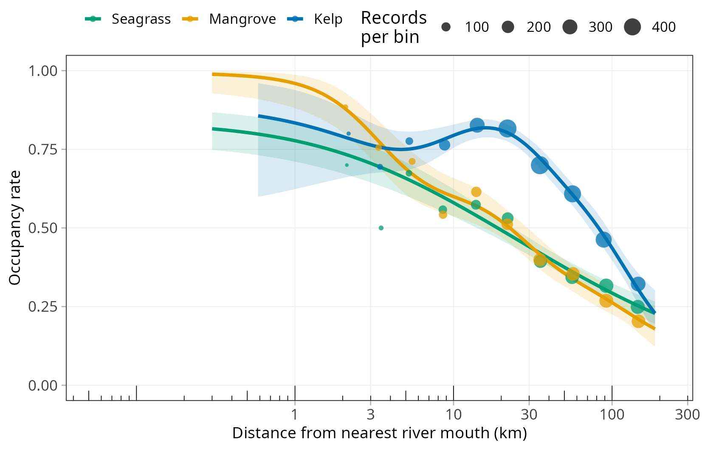
      <figcaption>上限なし：コンブ（青）は 15〜20 km に占有率の山。日本・韓国の観察密度によるもの。</figcaption>
    </figure>
    <figure>
      
      <figcaption>上限 100：山は消え、3群とも河口から離れるほど占有率が下がる形に。</figcaption>
    </figure>
  </div>
  <p>v5 の「cool-temperate to subpolar（11.9 ± 4.2 °C、49.7°）」は「temperate to subpolar（13.3 ± 4.6 °C）」に改める必要があります。</p>
</section>

<section id="supp">
  <h2>補足解析（上限 100）</h2>

  <h3>濁度の分解</h3>
  <div class="well"><table>
    <thead><tr><th>成分</th><th class="num">説明率</th></tr></thead>
    <tbody>
      <tr><td>合計（気候 + 河川）</td><td class="num">40.7%</td></tr>
      <tr><td>気候だけが説明する分</td><td class="num">19.1%</td></tr>
      <tr class="hl"><td>河川だけが説明する分</td><td class="num">23.0%</td></tr>
      <tr><td>共有（打ち消し合い、実質 0）</td><td class="num">−1.4%</td></tr>
    </tbody>
  </table></div>
  <p>残差モデル（R² = 0.224）では、流量が 10 倍になると陸域由来の濁度は 1.42 倍、河口距離が 10 倍になると 0.36 倍になります（どちらも p &lt; 10<sup>−15</sup>）。濁度の約4分の1は河川項だけで説明でき、考察ではこの割合を示せます。</p>

  <h3>距離の関数形</h3>
  <div class="well"><table>
    <thead><tr><th>関数形</th><th class="num"><span class="eco sg">海草</span></th><th class="num"><span class="eco mg">マングローブ</span></th><th class="num"><span class="eco kp">コンブ</span></th><th class="num">平均</th></tr></thead>
    <tbody>
      <tr><td><code>log₁₀(d+1)</code>（現行）</td><td class="num">0.675</td><td class="num">0.689</td><td class="num">0.697</td><td class="num">0.687</td></tr>
      <tr><td><code>1/(d+1)</code></td><td class="num">0.669</td><td class="num">0.684</td><td class="num">0.694</td><td class="num">0.682</td></tr>
      <tr><td><code>exp(−d/50)</code></td><td class="num">0.683</td><td class="num">0.677</td><td class="num">0.706</td><td class="num">0.689</td></tr>
    </tbody>
  </table></div>
  <p>差は最大 0.007 で、ばらつき（SD 0.05〜0.09）よりはるかに小さく、順位も実行ごとに入れ替わります。<code>log_dist</code> のまま据え置きます。</p>

  <h3>河川の大きさ：流域面積・流量・流出高</h3>
  <p>流出高は流量 ÷ 流域面積（mm/年）で、流域がどれだけ湿っているかを表します。大きくても乾燥した流域では低くなるので、コメントの「植生が乏しいのに流域だけ広い」状況を直接とらえる指標です。「どちらもなし」に対する CV AUC の上乗せを、同じ反復内で比べました。</p>
  <div class="well"><table>
    <thead><tr><th>上乗せする変数</th><th class="num"><span class="eco sg">海草</span></th><th class="num"><span class="eco mg">マングローブ</span></th><th class="num"><span class="eco kp">コンブ</span></th></tr></thead>
    <tbody>
      <tr><td>流域面積</td><td class="num">−0.012 [−0.040, +0.009]</td><td class="num">−0.003 [−0.019, +0.012]</td><td class="num">+0.011 [−0.032, +0.059]</td></tr>
      <tr><td>流量</td><td class="num">+0.006 [−0.011, +0.041]</td><td class="num">−0.006 [−0.020, +0.000]</td><td class="num">−0.004 [−0.046, +0.036]</td></tr>
      <tr><td>面積 + 流量</td><td class="num">+0.004 [−0.018, +0.054]</td><td class="num">+0.010 [−0.009, +0.027]</td><td class="num">+0.010 [−0.025, +0.057]</td></tr>
      <tr class="hl"><td>流出高</td><td class="num">−0.005 [−0.039, +0.028]</td><td class="num">+0.025 [+0.007, +0.051]</td><td class="num">+0.021 [−0.010, +0.074]</td></tr>
      <tr><td>流量 + 流出高</td><td class="num">+0.003 [−0.033, +0.055]</td><td class="num">+0.019 [−0.000, +0.043]</td><td class="num">+0.014 [−0.013, +0.063]</td></tr>
    </tbody>
  </table></div>
  <p class="caption">中央値 [95% 区間]、ブートストラップ 50 回。log 流出高と log 流域面積の相関は r = −0.79、log 流量とは r = −0.21。</p>
  <p>流量・面積はどの生態系でも上乗せがなく、「近さは効くが、河川の大きさは効かない」という結論は維持できます。流出高はマングローブでのみ区間が0を含みませんでした。ただし、マングローブの記録は同じ気候帯の背景より流出高が<b>低い</b>場所に多く（中央値 748 vs 1,090 mm/年）、「乾燥した流域で少ない」とは逆向きです。GBIF の記録が乾燥側の海岸（オーストラリア北部、紅海、フロリダなど）に偏っている可能性があり、主張にはせず手がかりとして1文で触れる程度が妥当です。</p>
</section>

<section id="v5">
  <h2>原稿 v5 との対照</h2>
  <p>改訂版の値は、背景点を 10 回引き直したときの中央値 [最小, 最大] です（種あたり上限 100）。数値が動いた原因は、実行環境（terra による背景点の違い）、カジメの追加と種あたり上限、規制シナリオの不具合の修正、流域面積から流量への置き換え、背景点 10 回の中央値で示すこと、変数セットの6つに分けられます。</p>
  <div class="well"><table>
    <thead><tr><th>項目</th><th class="num">原稿 v5</th><th class="num">改訂・現行4変数</th><th class="num">改訂・新3変数</th><th>主な原因</th></tr></thead>
    <tbody>
      <tr><td>記録数 / 種 / 属</td><td class="num">2,040 / 93 / 25</td><td class="num" colspan="2" style="text-align:center">3,428 / 94 / 25（モデルに使用 1,803）</td><td>カジメ追加・上限</td></tr>
      <tr><td>コンブの気候</td><td class="num">11.9 ± 4.2 °C、|緯度| 49.7°</td><td class="num" colspan="2" style="text-align:center">13.3 ± 4.6 °C、44.9°</td><td>カジメ追加</td></tr>
      <tr><td>CV AUC 海草</td><td class="num">0.611 ± 0.104</td><td class="num">0.651 [0.621, 0.678]</td><td class="num">0.657 [0.628, 0.675]</td><td>環境・背景点</td></tr>
      <tr><td>CV AUC マングローブ</td><td class="num">0.687 ± 0.045</td><td class="num">0.725 [0.689, 0.749]</td><td class="num">0.732 [0.699, 0.758]</td><td>環境・背景点</td></tr>
      <tr><td>CV AUC コンブ</td><td class="num">0.749 ± 0.014</td><td class="num">0.737 [0.685, 0.765]</td><td class="num">0.731 [0.691, 0.765]</td><td>カジメ・背景点</td></tr>
      <tr><td>Stage 1 AUC 海草 / マングローブ / コンブ</td><td class="num">0.834 / 0.880 / 0.914</td><td class="num" colspan="2" style="text-align:center">0.789 / 0.823 / 0.894</td><td>環境（terra）</td></tr>
      <tr><td>マングローブ 河口距離の重要度*</td><td class="num">47.4%</td><td class="num">50.1% [27, 63]</td><td class="num">60.3% [34, 66]</td><td>背景点・変数セット</td></tr>
      <tr><td>コンブ 塩分 / 距離*</td><td class="num">68.8 / 24.6%</td><td class="num">51.2 / 35.3%</td><td class="num">47.5 / 29.8%</td><td>カジメ追加</td></tr>
      <tr><td>海草 塩分 / 距離 / 濁り*</td><td class="num">15.4 / 14.7 / 13.4%</td><td class="num">13.9 / 18.8 / 13.2%</td><td class="num">12.7 / 25.2 / 10.3%</td><td>背景点・変数セット</td></tr>
      <tr><td>河川の大きさ*</td><td class="num">流域面積 0.3–3.3%</td><td class="num">流量 0.9–2.0%</td><td class="num">（変数に入れない）</td><td>面積→流量</td></tr>
      <tr><td>河口距離の中央値 マングローブ / コンブ / 海草</td><td class="num">31.8 / 33.0 / 43.7 km</td><td class="num" colspan="2" style="text-align:center">28.5 / 33.2 / 39.7 km</td><td>カジメ・上限</td></tr>
      <tr><td>河口での占有率 マングローブ / 海草 / コンブ</td><td class="num">0.98 / 0.81 / 0.48</td><td class="num" colspan="2" style="text-align:center">≈ 0.99 / 0.80 / 0.56</td><td>カジメ・上限</td></tr>
      <tr><td>占有率 0.50 の距離 マングローブ / 海草</td><td class="num">21 / 17 km</td><td class="num" colspan="2" style="text-align:center">≈ 25 / 16 km</td><td>カジメ・上限</td></tr>
      <tr class="hl"><td>70% 規制 海草</td><td class="num">−8.3%</td><td class="num">−10.6% [−12.1, −9.1]</td><td class="num">−15.1% [−17.7, −10.1]</td><td>不具合修正・変数セット</td></tr>
      <tr class="hl"><td>70% 規制 マングローブ</td><td class="num">−6.0%</td><td class="num">−11.2% [−13.1, −9.1]</td><td class="num">−13.5% [−16.7, −11.6]</td><td>同上</td></tr>
      <tr class="hl"><td>70% 規制 コンブ</td><td class="num">−3.1%</td><td class="num">−7.2% [−9.7, −5.1]</td><td class="num">−11.3% [−12.6, −9.0]</td><td>同上</td></tr>
    </tbody>
  </table></div>
  <p class="caption">* 1° 間引き後の種ごとモデルの中央値（FigSp1）を、さらに背景点 10 回で中央値をとったもの。占有率と 0.50 の距離は背景点 1 回分の FigD4 からの読み取りで目安。v5 の CV AUC は 4 ブロックの平均 ± SD。</p>

  <h3>原稿の主張で変わるところ</h3>
  <ul style="margin:0;padding-left:1.2em;display:grid;gap:6px">
    <li><b>1段階 vs 2段階：</b>「1段階では河川のシグナルが埋もれる」は言いすぎで、「2段階にすると河口距離の寄与がおよそ2倍に測れる」に改める。</li>
    <li><b>流量規制の影響：</b>v5 の約 1.5〜2 倍（変数セットによっては約 2〜3.5 倍）。v5 では距離の経路がシナリオに反映されていなかったため、回答書で開示する。</li>
    <li><b>コンブの特徴づけ：</b>「cool-temperate to subpolar」→「temperate to subpolar」。塩分は今も最重要だが、割合は約7割から約5割に下がり、河口距離の比重が上がった。</li>
    <li><b>濁度：</b>「解釈しにくい」というぼかしをやめ、分解した結果（気候だけで 19%、河川だけで 23%）で書く。</li>
    <li><b>AUC の示し方：</b>1回の値ではなく背景点 10 回の中央値と範囲で示す。Stage 1 は 0.02〜0.06 下がったが 0.79〜0.89 と高く、「気候が分布範囲を決める」は保たれる。</li>
  </ul>
  <h3>変わらないところ</h3>
  <ul style="margin:0;padding-left:1.2em;display:grid;gap:6px">
    <li>河口に近いほど占有率が高いという中心の結果。マングローブでは河口距離が最重要で、河口での占有率もほぼ 1 のまま。</li>
    <li>「河川の大きさは効かない」は、より良い指標の流量で確認でき、かえって強くなった。</li>
    <li>距離の関数形（log / 1/D / exp）は結果に影響しない。</li>
  </ul>
</section>

<section id="figs">
  <h2>図の比較（原稿 v5 → 改訂版）</h2>
  <p>論文の図を、改訂版（塩分・σk・河口距離、種あたり上限 100）で作り直しました。左が原稿 v5（v5 のコードを terra 1.8.86 で再現したもの）、右が改訂版です。改訂版の図は背景点1回分（シード 42）なので、本文に載せる数値は背景点10回の中央値を使います。</p>
  <h3>全球の生息適合度（本図）</h3>
  <div class="figpair">
    <figure>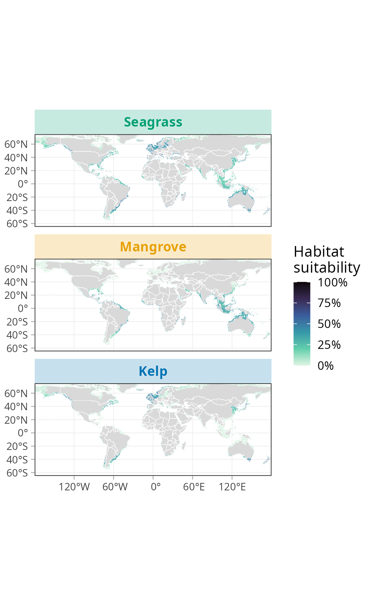<figcaption>原稿 v5</figcaption></figure>
    <figure>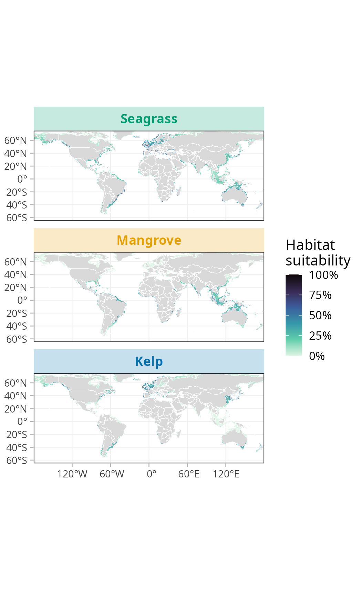<figcaption>改訂版</figcaption></figure>
  </div>
  <p>分布のパターンはほぼ同じです。違いはコンブで、東アジア（日本・韓国・中国沿岸）の適合度が上がりました。カジメを加えた効果です。海草とマングローブに目立つ違いはありません。</p>
  <h3>Stage 1：気候による分布範囲</h3>
  <div class="figpair">
    <figure><figcaption>原稿 v5</figcaption></figure>
    <figure>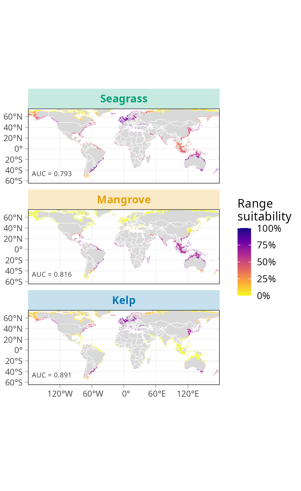<figcaption>改訂版</figcaption></figure>
  </div>
  <p>空間パターンはほぼ同じで、コンブは日本周辺の範囲がやや広がりました。AUC は 0.834 / 0.880 / 0.914 から 0.793 / 0.816 / 0.891 に下がっています。主因は背景点の違い（terra の版）で、背景点10回の中央値は 0.789 / 0.823 / 0.894 です。「気候が分布範囲を決める」という主張は保たれます。</p>
  <h3>河口からの距離と占有率</h3>
  <div class="figpair">
    <figure>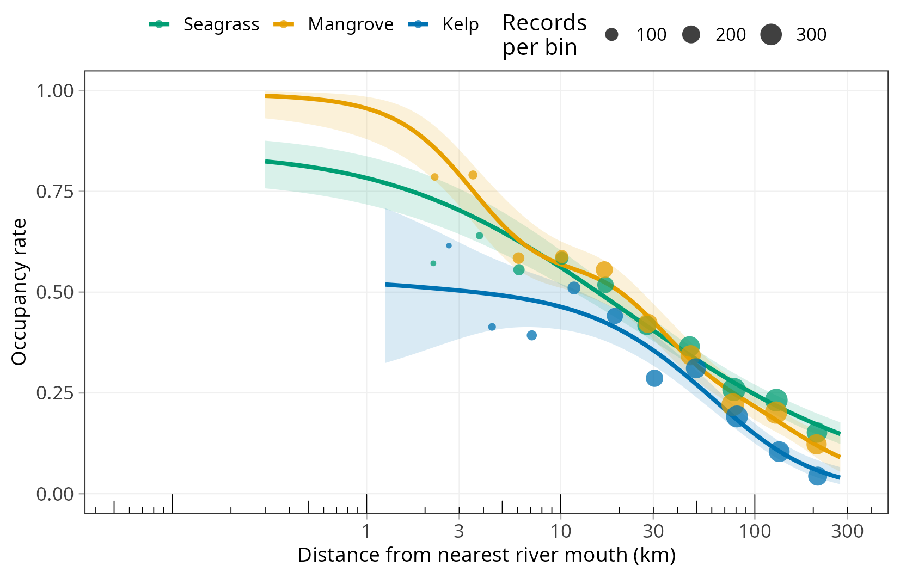<figcaption>原稿 v5</figcaption></figure>
    <figure>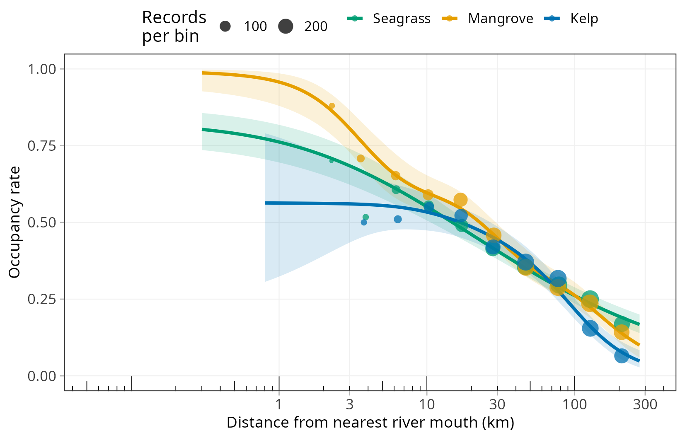<figcaption>改訂版</figcaption></figure>
  </div>
  <p>形はほぼ同じです。マングローブは河口でほぼ 1、海草は約 0.8 のまま。コンブは河口付近が 0.52 から 0.56 にわずかに上がりました。河口に近いほど占有率が高いという中心の結果は変わりません。</p>
  <h3>河口からの距離の分布</h3>
  <div class="figpair">
    <figure>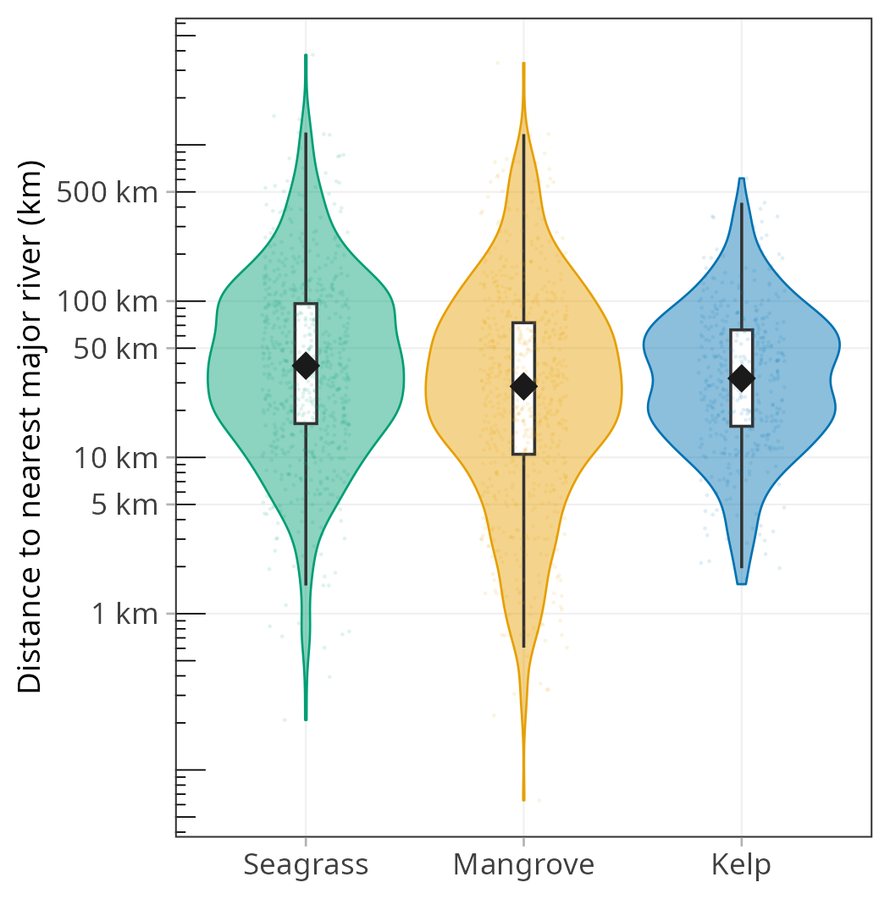<figcaption>原稿 v5</figcaption></figure>
    <figure>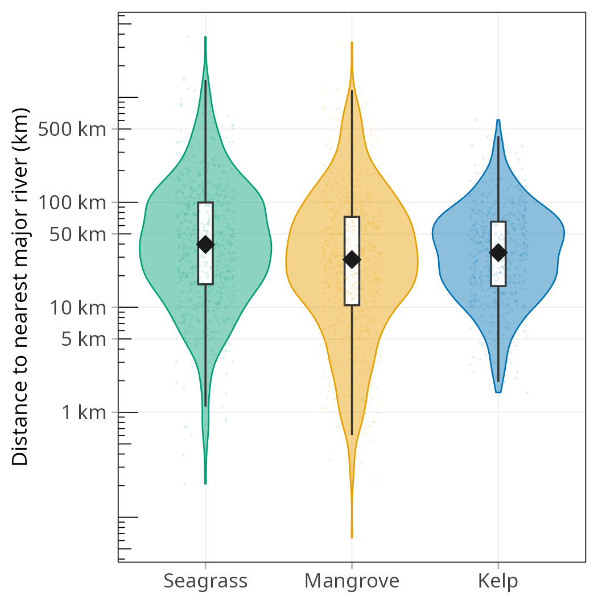<figcaption>改訂版</figcaption></figure>
  </div>
  <p>ほぼ同じです。カジメは1種あたり100件の上限で抑えているため、コンブの分布の形もほとんど変わりません。</p>
  <h3>変数の重要度（生態系モデル）</h3>
  <div class="figpair">
    <figure>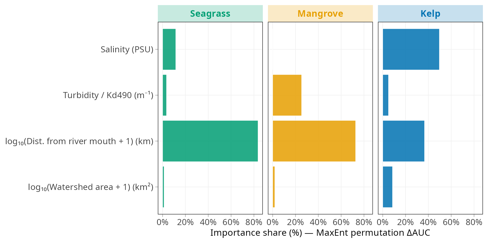<figcaption>原稿 v5</figcaption></figure>
    <figure>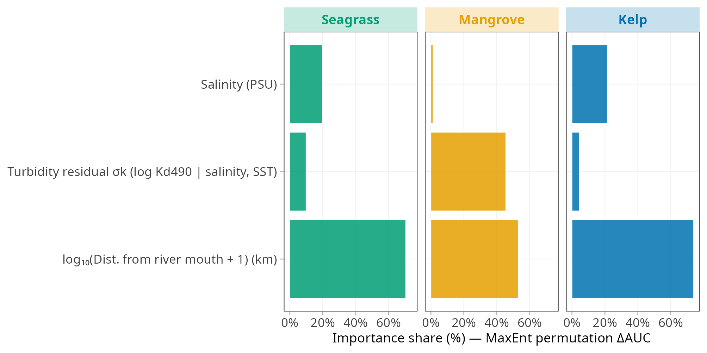<figcaption>改訂版</figcaption></figure>
  </div>
  <p>大きく変わる図です。コンブの最重要変数が塩分（約50%）から河口距離（約74%）に入れ替わりました。マングローブは河口距離が 72% から 53% に下がり、σk が 46%（v5 の濁度は 25%）に上がっています。海草は河口距離が 85% から 70%、塩分が 10% から 20%。流域面積の行はなくなりました。</p>
  <h3>応答曲線（種ごとモデルの平均 ± SD）</h3>
  <div class="figpair">
    <figure>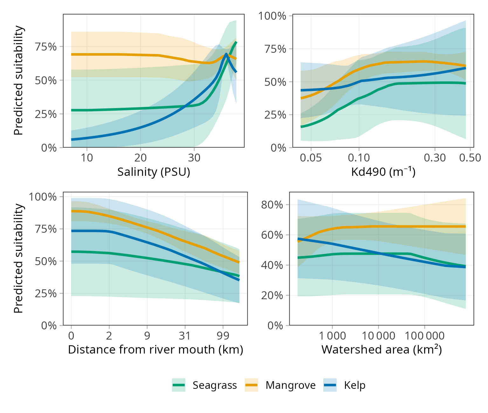<figcaption>原稿 v5</figcaption></figure>
    <figure>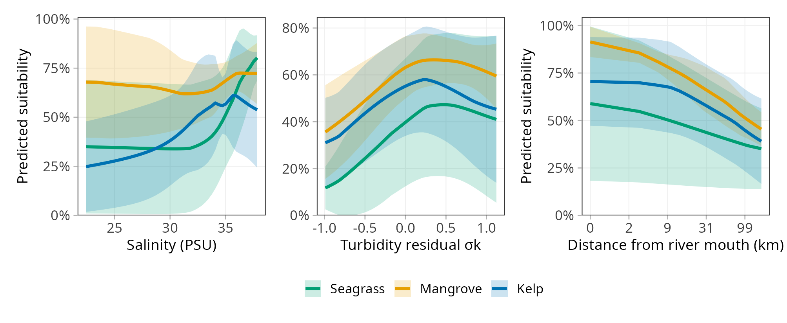<figcaption>改訂版</figcaption></figure>
  </div>
  <p>濁りへの応答の形が変わります。v5 の濁度は単調増加（濁るほど適合度が高い）でしたが、σk では3群とも山型で、塩分と水温から予想されるよりやや濁った場所（σk ≈ +0.2〜+0.5）で最大になります。塩分と河口距離の応答はほぼ同じです。流域面積のパネル（ほぼ平ら）はなくなり、3パネルになりました。</p>
  <h3>種ごとの変数重要度</h3>
  <div class="figpair">
    <figure>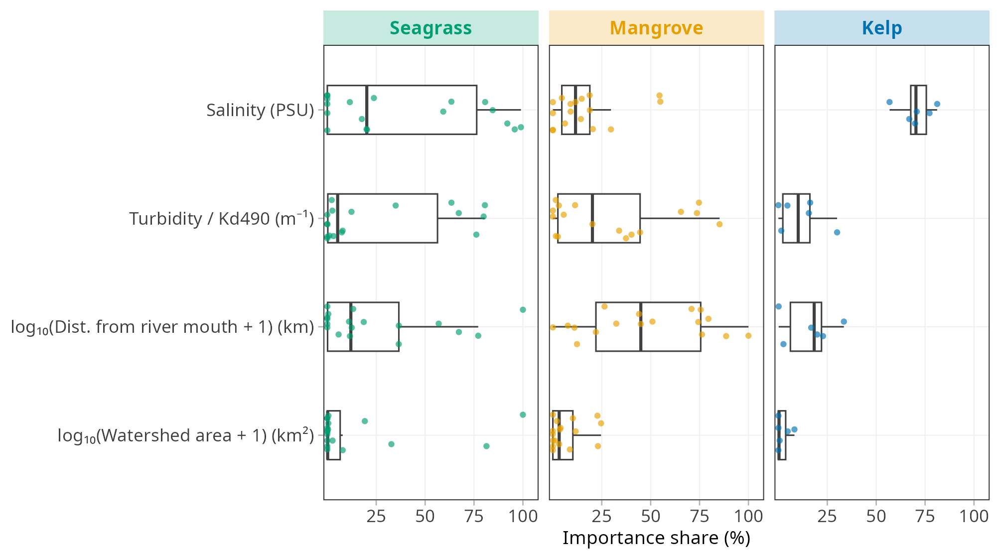<figcaption>原稿 v5</figcaption></figure>
    <figure>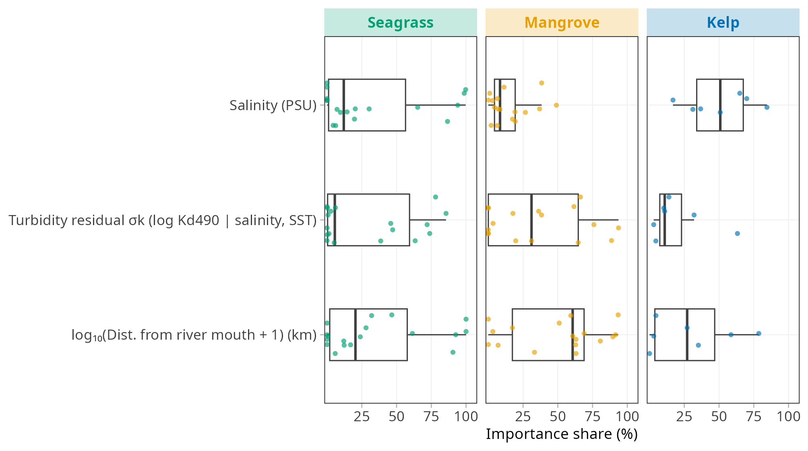<figcaption>改訂版</figcaption></figure>
  </div>
  <p>コンブの塩分は v5 では 70% 前後に集中していましたが、改訂版は 50% 前後で幅が広がりました。カジメ以外の種構成の影響が見えるようになったためです。マングローブの河口距離は中央値 45% から 60% に上がりました。</p>
  <h3>交差検証の ROC</h3>
  <div class="figpair">
    <figure>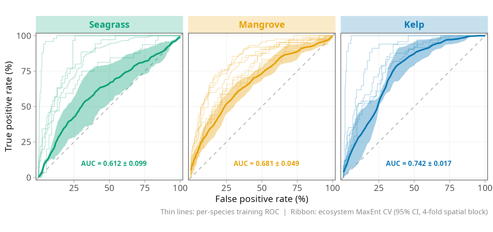<figcaption>原稿 v5</figcaption></figure>
    <figure>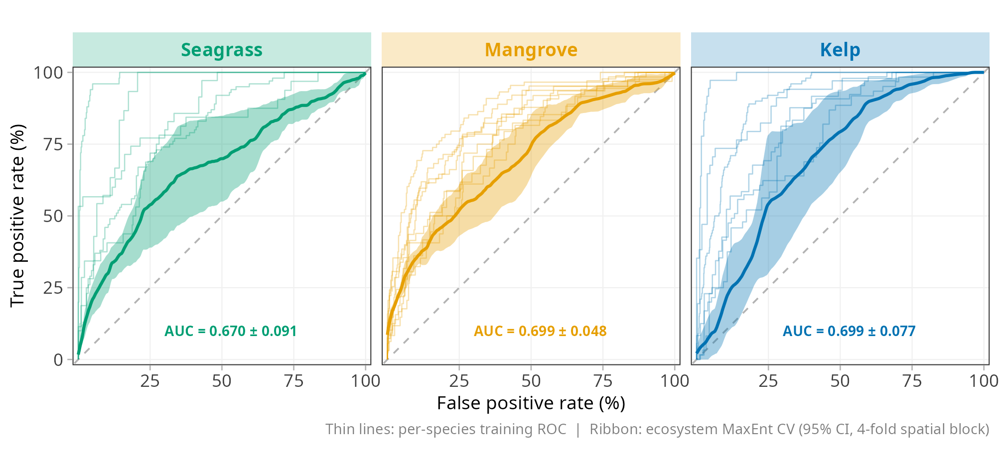<figcaption>改訂版</figcaption></figure>
  </div>
  <p>AUC は 0.612 / 0.681 / 0.742 から 0.670 / 0.699 / 0.699 になりました（この図は背景点1回分。10回の中央値は 0.657 / 0.732 / 0.731）。コンブはブロック間のばらつきが大きくなっています（±0.017 から ±0.077）。</p>
  <h3>流量規制の強さと適合度の変化</h3>
  <div class="figpair">
    <figure>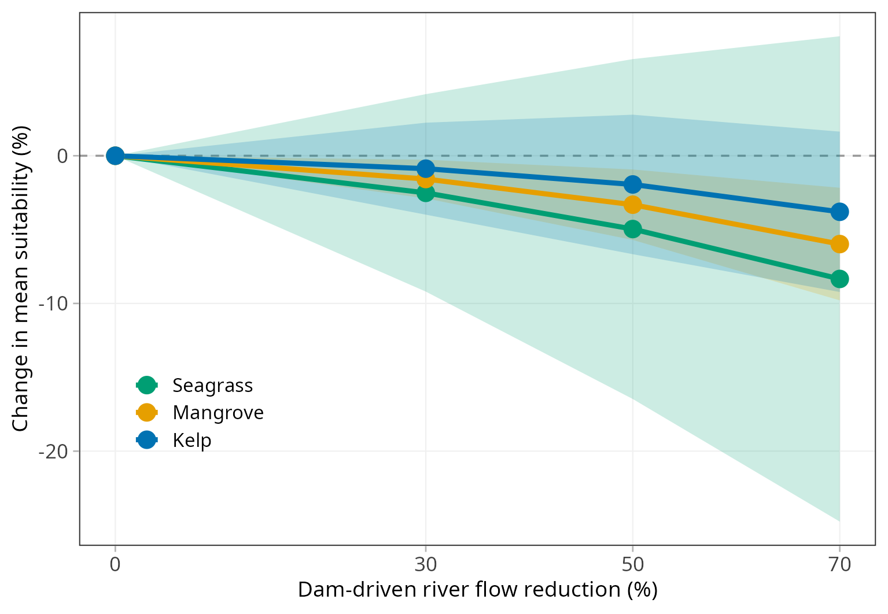<figcaption>原稿 v5</figcaption></figure>
    <figure>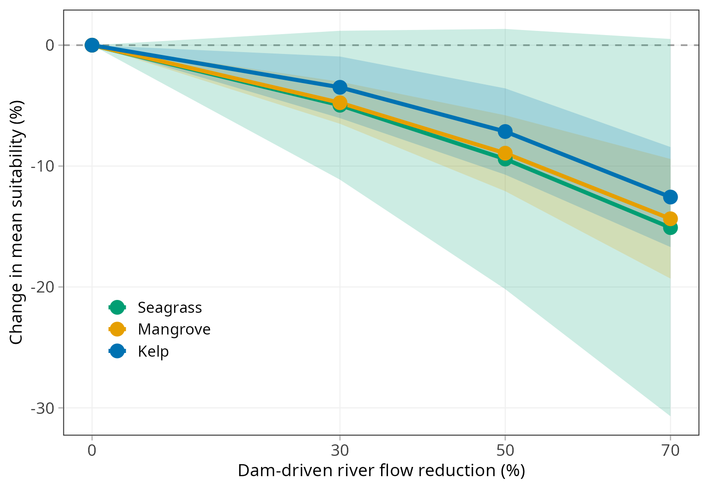<figcaption>改訂版</figcaption></figure>
  </div>
  <p>最も大きく変わる図です。70% 規制で −8.3 / −6.0 / −3.8% だったのが −15.1 / −14.4 / −12.6% になり、v5 の「海草 > マングローブ > コンブ」の順も、3群がほぼ並ぶ形に変わりました。マングローブとコンブの区間も 0 から離れています。原因は、距離経路の不具合の修正と、σk の山型の応答（河口付近の水が澄むと適合度が下がる）の2つです。</p>
  <p class="caption">改訂で新たに加えた補足図（濁度の分解 FigR1、1段階 vs 2段階 FigR2）は v5 に対応する図がないため、ここでは比べていません。ファイル名はパイプラインの出力名（<code>output/</code>）です。</p>
</section>

<section id="sigk">
  <h2>σk の定義（10/30 のコメント）</h2>
  <div class="callout">
    <p><b>コメント：陸域由来の栄養が対象地点に届くまでの分解も温度依存なので、K = a0 + a1·S + a2·T + a3·S·T + σk のように交互作用を入れるか、単純に K = a0 + a1·T + σk の残差を使うほうがよいかもしれない。</b></p>
  </div>
  <p><b>結論：</b>σk は今の「塩分＋水温」（ST）のままにします。交互作用は分解を表せていないので採用せず、「水温だけ」（T）を感度分析にします。</p>

  <h3>交互作用（塩分×水温）を採用しない理由</h3>
  <p>交互作用の項は統計的にははっきり効いていて（t = −9.6、濁りのモデルの R² は 0.17 から 0.19）、SDM の結果もほとんど変わりませんでした（予測性能の差 ±0.01）。問題は向きです。塩分が 1 PSU 下がったときの濁りの増え方は、水温 10 °C で約 5%、28 °C で約 10% と、<b>暖かい海ほど大きく</b>なりました。分解で陸の影響が薄まるなら、逆に暖かい海ほど小さくなるはずです。</p>
  <p>全球のデータでは、暖かい海ほど、土砂や有色の溶存有機物を多く運ぶ熱帯の大河川の河口でもあります。交互作用の項は、分解の温度依存ではなく、この「暖かい地域の川ほど濁りを多く運ぶ」という地域差を拾っています。水温と川のタイプが一緒に動くため、このデータでは分解の効果を切り出せません。逆向きという結果は、分解がないことではなく、この方法では分解を検証できないことを示しています。そのため交互作用は採用せず、分解の温度依存は考察で限界として扱います。</p>

  <h3>「水温だけの残差」（T）との比較</h3>
  <p>T は「濁りから水温の影響だけを除く」という単純な案で、根拠が交互作用とは別なので感度分析として残します。</p>
  <div class="well"><table>
    <thead><tr><th>背景点 10 回の中央値（海草 / マングローブ / コンブ）</th><th class="num">ST（本解析）</th><th class="num">T（水温だけ）</th></tr></thead>
    <tbody>
      <tr><td>濁りのモデルの R²</td><td class="num">0.166</td><td class="num">0.058</td></tr>
      <tr><td>σk と塩分の相関</td><td class="num">0.00</td><td class="num">−0.32</td></tr>
      <tr><td>σk と河口距離の相関</td><td class="num">−0.45</td><td class="num">−0.47</td></tr>
      <tr><td>CV AUC</td><td class="num">0.657 / 0.732 / 0.731</td><td class="num">0.634 / 0.733 / 0.744</td></tr>
      <tr><td>σk の重要度</td><td class="num">9 / 40 / 4%</td><td class="num">2 / 41 / 6%</td></tr>
      <tr><td>河口距離の重要度</td><td class="num">75 / 57 / 69%</td><td class="num">80 / 58 / 72%</td></tr>
      <tr class="hl"><td>70% 規制</td><td class="num">−15.1 / −13.5 / −11.3%</td><td class="num">−11.4 / −12.4 / −7.5%</td></tr>
    </tbody>
  </table></div>
  <p class="caption">同じ回どうしの差（T − ST）：AUC は海草 −0.021、マングローブとコンブは ±0.01。70% 規制は +1.0〜+4.0 ポイント（T のほうが小さい）。交互作用版の値（AUC 0.661 / 0.725 / 0.732、規制 −14.0 / −12.9 / −9.7%）は ST と T の間に収まります。</p>
  <p>T では σk が塩分と重なる（r = −0.32）ため、SDM の中で塩分と σk が同じ情報を取り合い、海草の予測性能がやや下がります。河口距離が最重要であること、σk への応答が山型であることは ST と同じです。違いは規制の影響の大きさで、T のほうが小さくなります。</p>

  <h3>図で見る違い（背景点 1 回分、シード 42）</h3>
  <p>応答曲線（左から塩分・σk・河口距離）</p>
  <div class="figpair">
    <figure><figcaption>ST：塩分＋水温（本解析）</figcaption></figure>
    <figure>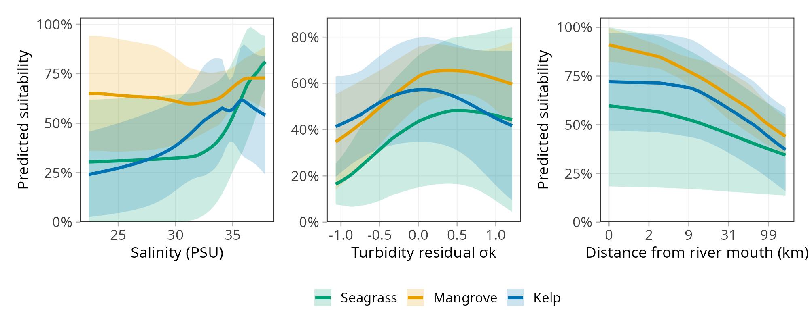<figcaption>T：水温だけ</figcaption></figure>
  </div>
  <p>水温だけ（T）では、コンブの σk への応答が平らになって山の位置が左（σk ≈ 0）にずれ、海草は σk が高い側でも下がりにくくなります。塩分と河口距離の応答は変わりません。</p>
  <p>流量規制の強さと適合度の変化</p>
  <div class="figpair">
    <figure><figcaption>ST：70% で −15.1 / −14.4 / −12.6%</figcaption></figure>
    <figure>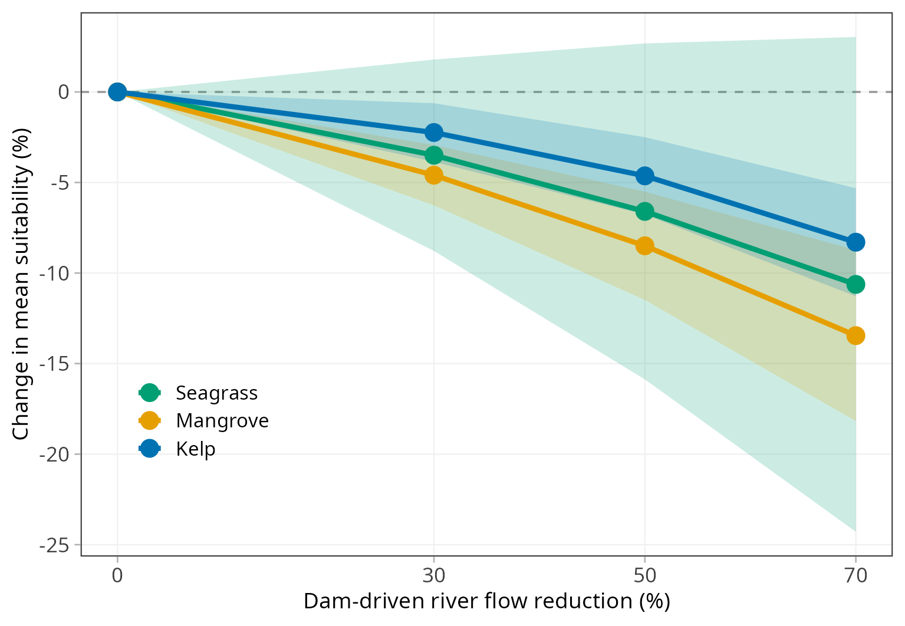<figcaption>T：−10.6 / −13.5 / −8.3%</figcaption></figure>
  </div>
  <p>どちらも3群とも適合度が下がり、v5（−8.3 / −6.0 / −3.8%）より大きくなります。ST は「海草 ≈ マングローブ ＞ コンブ」の順ですが、T では海草とコンブの低下が小さくなり、マングローブが最も大きくなります（値は海草 / マングローブ / コンブ、この1回分）。</p>

  <p><b>原稿での扱い（10/30 決定）。</b>本解析は ST。T を感度分析として補足に載せ、交互作用については補足に1文「塩分×水温の項を加えても結果は変わらず、この項は分解ではなく河川の地域差を反映していた」と書きます。規制の影響は ST と T の幅で「70% 規制で海草 −11〜−15%、マングローブ −12〜−14%、コンブ −8〜−11%」と示します。分解の温度依存は、このデータでは切り出せないことを考察で限界として述べます。</p>
</section>

<section id="struct">
  <h2>共著者の構造モデル案（10/30 のコメント）</h2>
  <div class="callout">
    <p><b>提案：河口距離や集水域面積を直接 SDM に入れず、陸からの影響が届く経路として整理する。</b></p>
    <ul style="margin:0;padding-left:1.2em;display:grid;gap:4px">
      <li>塩分の式：S = b0 − b1·B·exp(−b2·D)。淡水が海を薄めるので陸の影響は塩分の低下に現れ、河口で最も低く、離れると外洋の塩分 b0 に戻る。集水域 B が大きいほど低下も大きい（b1 &gt; 0）。</li>
      <li>濁度の分解：log K = a0 + a1·S + a2·T + σk。塩分で説明できる陸由来、水温で説明できる海の性質、残り σk を海由来とみなす。</li>
      <li>SDM は水温 T・塩分 S・σk で作り、河口距離 D と集水域 B は塩分を通じて効くとする。</li>
    </ul>
  </div>
  <p>外洋の塩分 b0 は、提案どおり海岸から 50 km 以内のセルを欠損させ、外洋の値から IDW で補間しました（25 km・100 km でも確認）。式は log(b0 − S) = log(b1) + β·log(B) − D/L の形で、B の指数 β も推定しています。以下、確かめた4点です。</p>

  <h3>1. 塩分の式 → 距離の減衰は見えたが、集水域の効果は出ない</h3>
  <div class="well"><table>
    <thead><tr><th>河口からの距離</th><th class="num">セル数</th><th class="num">b0 − S 中央値</th><th class="num">b0 − S 90%点</th></tr></thead>
    <tbody>
      <tr><td>0〜10 km</td><td class="num">660</td><td class="num">0.15 PSU</td><td class="num">2.37</td></tr>
      <tr><td>10〜25 km</td><td class="num">2,202</td><td class="num">0.14</td><td class="num">2.56</td></tr>
      <tr><td>25〜50 km</td><td class="num">2,584</td><td class="num">0.09</td><td class="num">1.63</td></tr>
      <tr><td>50〜100 km</td><td class="num">3,102</td><td class="num">0.02</td><td class="num">1.06</td></tr>
      <tr><td>100〜200 km</td><td class="num">3,384</td><td class="num">0.00</td><td class="num">0.36</td></tr>
      <tr><td>200〜500 km</td><td class="num">2,729</td><td class="num">−0.01</td><td class="num">0.07</td></tr>
    </tbody>
  </table></div>
  <p class="caption">水深 100 m 以浅・河口から 500 km 以内の 0.5° 格子。IDW の b0（欠損幅 50 km）。</p>
  <p>河口近くほど塩分が低く、50〜100 km でほぼ外洋の値に戻ります。減衰のスケールは約 58 km でした（欠損幅 25 km で 36 km、100 km で 92 km と変わるので目安）。一方で集水域面積の指数は β ≈ −0.005（p = 0.60）で、大きな川ほど塩分が下がる関係は出ません。海岸近くでも b0 より低塩分のセルは 38% で、式全体の説明力も R² ≈ 0.05 です。全球の塩分データ（Bio-ORACLE、約 9 km 格子の平均値）では河口ごとのプルームが均され、残っているのは主にベンガル湾のような広い海域の低塩分だと考えられます。</p>

  <h3>2. 残差 σk → 海由来にはなっていない</h3>
  <p>log(濁度) を塩分と水温で回帰した説明力は R² = 0.17 でした。残差 σk は河口距離とまだ強く相関し（r = −0.45）、σk を河口距離と流量で回帰すると R² = 0.22 になります。塩分が捉えきれなかった陸の影響が残差に回るためで、今のデータでは σk を「海域由来」と読めません。</p>

  <h3>3. 河口距離を外した SDM → 予測性能が下がる</h3>
  <div class="well"><table>
    <thead><tr><th>2段階目の CV AUC（中央値）</th><th class="num"><span class="eco sg">海草</span></th><th class="num"><span class="eco mg">マングローブ</span></th><th class="num"><span class="eco kp">コンブ</span></th></tr></thead>
    <tbody>
      <tr><td>現行（塩分・濁度・河口距離・流量）</td><td class="num">0.670</td><td class="num">0.734</td><td class="num">0.698</td></tr>
      <tr><td>構造モデル（塩分・σk）</td><td class="num">0.623</td><td class="num">0.687</td><td class="num">0.604</td></tr>
      <tr><td>構造モデル + log 河口距離</td><td class="num">0.664</td><td class="num">0.741</td><td class="num">0.698</td></tr>
    </tbody>
  </table></div>
  <div class="well"><table>
    <thead><tr><th>同じ反復内での差</th><th class="num"><span class="eco sg">海草</span></th><th class="num"><span class="eco mg">マングローブ</span></th><th class="num"><span class="eco kp">コンブ</span></th></tr></thead>
    <tbody>
      <tr><td>構造モデル − 現行（2段階）</td><td class="num">−0.041 [−0.099, −0.002]</td><td class="num">−0.047 [−0.074, −0.012]</td><td class="num">−0.089 [−0.164, +0.056]</td></tr>
      <tr class="hl"><td>河口距離の上乗せ（1段階、T・S・σk に追加）</td><td class="num">+0.044 [+0.016, +0.096]</td><td class="num">+0.030 [+0.013, +0.049]</td><td class="num">+0.044 [+0.020, +0.071]</td></tr>
      <tr><td>河口距離の上乗せ（2段階、S・σk に追加）</td><td class="num">+0.043 [−0.011, +0.086]</td><td class="num">+0.053 [+0.024, +0.078]</td><td class="num">+0.085 [−0.031, +0.164]</td></tr>
    </tbody>
  </table></div>
  <p class="caption">中央値 [95% 区間]、ブートストラップ 50 回、上限 100。</p>
  <p>河口距離を外すと AUC が 0.04〜0.09 下がり、戻すとほぼ回復します。1段階モデルでは3群とも、距離の上乗せの区間が 0 を含みません。距離の情報を塩分では運べていません。</p>

  <h3>4. 集水域の効果を塩分経由で → ゼロ</h3>
  <p>推定した塩分の式で集水域を 2 倍・10 倍にしたときの、構造モデルでの適合度の変化は 0.02% 未満でした。</p>

  <h3>補足：塩分の式をそのまま説明変数にする</h3>
  <p>「河川規模 × exp(−距離/L)」をプルーム指数 P = log(1 + Q·exp(−D/L)) として、河口距離と流量の代わりに入れる版も試しました。</p>
  <div class="well"><table>
    <thead><tr><th>現行との差（2段階）</th><th class="num"><span class="eco sg">海草</span></th><th class="num"><span class="eco mg">マングローブ</span></th><th class="num"><span class="eco kp">コンブ</span></th></tr></thead>
    <tbody>
      <tr class="hl"><td>プルーム指数 L = 10 km</td><td class="num">−0.018 [−0.054, +0.018]</td><td class="num">−0.009 [−0.023, +0.017]</td><td class="num">−0.028 [−0.065, +0.012]</td></tr>
      <tr><td>プルーム指数 L = 50 km</td><td class="num">−0.041 [−0.082, −0.016]</td><td class="num">−0.031 [−0.056, −0.010]</td><td class="num">−0.070 [−0.119, +0.013]</td></tr>
      <tr><td>プルーム指数 L = 100 km</td><td class="num">−0.043 [−0.088, −0.007]</td><td class="num">−0.043 [−0.071, −0.008]</td><td class="num">−0.080 [−0.145, +0.028]</td></tr>
      <tr><td>河川規模なし（塩分・濁度・河口距離）</td><td class="num">−0.006 [−0.041, +0.011]</td><td class="num">+0.006 [−0.000, +0.020]</td><td class="num">+0.004 [−0.036, +0.046]</td></tr>
    </tbody>
  </table></div>
  <p>どの L でも現行を上回らず、L = 10 km が最も近い結果でした。河川規模を掛けても距離だけのモデルより良くならず、「河川の大きさは効かない」というこれまでの結果と整合します。exp(−距離/L) を使う場合も、L は 10 km 前後と短めが妥当です。</p>

  <p><b>まとめ。</b>考え方は正しいのですが、全球データの解像度が足りず、塩分は河口距離の代わりになりませんでした。今のデータで陸の影響の強さを最もよく表しているのは河口距離です。原稿では、このモデルを陸からの流入の経路を説明する枠組みとして考察で紹介し、塩分の距離減衰を補足に示し、SDM には河口距離を残すのが良いと考えます。集水域の植生割合（RiverATLAS）は今回は見送りました。</p>
</section>

<section id="varset">
  <h2>変数セットの比較と背景点の引き直し</h2>
  <p>構造モデル案の検討から、2段階目の説明変数を「塩分・σk・河口距離」の3つにする案が出ました。σk は log(濁度) を塩分と水温で回帰した残差で、「塩分と水温から予想されるより濁っているか」を表します。現行の「塩分・濁度・河口距離・流量」と、本解析の全工程で比べました。背景点の引き直し1回で AUC が 0.03〜0.06 動くため、背景点を 10 回引き直し（乱数シード 42, 101〜109）、それぞれ両方の変数セットで回しています（計 20 回、種あたり上限 100）。</p>

  <div class="well"><table>
    <thead><tr><th>10 回の中央値 [最小, 最大]</th><th class="num">現行（4変数）</th><th class="num">新（塩分・σk・距離）</th></tr></thead>
    <tbody>
      <tr><td>CV AUC <span class="eco sg">海草</span></td><td class="num">0.651 [0.621, 0.678]</td><td class="num">0.657 [0.628, 0.675]</td></tr>
      <tr><td>CV AUC <span class="eco mg">マングローブ</span></td><td class="num">0.725 [0.689, 0.749]</td><td class="num">0.732 [0.699, 0.758]</td></tr>
      <tr><td>CV AUC <span class="eco kp">コンブ</span></td><td class="num">0.737 [0.685, 0.765]</td><td class="num">0.731 [0.691, 0.765]</td></tr>
      <tr><td>Stage 1 AUC 海草 / マングローブ / コンブ</td><td class="num" colspan="2" style="text-align:center">0.789 / 0.823 / 0.894（両セット共通、範囲 0.78–0.81 / 0.82–0.84 / 0.88–0.90）</td></tr>
      <tr><td>河口距離の重要度（生態系モデル）</td><td class="num">65 / 52 / 70%</td><td class="num">75 / 57 / 69%</td></tr>
      <tr class="hl"><td>70% 規制 <span class="eco sg">海草</span></td><td class="num">−10.6 [−12.1, −9.1]%</td><td class="num">−15.1 [−17.7, −10.1]%</td></tr>
      <tr class="hl"><td>70% 規制 <span class="eco mg">マングローブ</span></td><td class="num">−11.2 [−13.1, −9.1]%</td><td class="num">−13.5 [−16.7, −11.6]%</td></tr>
      <tr class="hl"><td>70% 規制 <span class="eco kp">コンブ</span></td><td class="num">−7.2 [−9.7, −5.1]%</td><td class="num">−11.3 [−12.6, −9.0]%</td></tr>
    </tbody>
  </table></div>
  <p class="caption">水深フィルタ後の背景点は 1,151〜1,266 点。70% 規制は種ごとの平均適合度の変化率の平均。</p>

  <div class="well"><table>
    <thead><tr><th>同じ回どうしの差（新 − 現行）</th><th class="num"><span class="eco sg">海草</span></th><th class="num"><span class="eco mg">マングローブ</span></th><th class="num"><span class="eco kp">コンブ</span></th></tr></thead>
    <tbody>
      <tr><td>CV AUC</td><td class="num">−0.001 [−0.013, +0.016]</td><td class="num">+0.009 [−0.004, +0.023]</td><td class="num">+0.004 [−0.026, +0.015]</td></tr>
      <tr><td>70% 規制（ポイント）</td><td class="num">−5.1 [−7.9, +0.8]</td><td class="num">−2.3 [−3.5, −2.0]</td><td class="num">−3.4 [−6.9, −2.2]</td></tr>
      <tr><td>新のほうが規制の影響が大きい回</td><td class="num">9 / 10</td><td class="num">10 / 10</td><td class="num">10 / 10</td></tr>
    </tbody>
  </table></div>

  <p><b>読み方。</b>予測性能はどの回でも同じで、差は背景点の引き直しによるばらつき（コンブで 0.69〜0.77）よりずっと小さい値です。規制の影響が新セットで大きく出るのは偶然ではなく、ほぼすべての回で一貫しています。σk への応答は3群とも山型で、塩分と水温から予想されるよりやや濁った場所（σk ≈ +0.2〜+0.5）で適合度が最も高くなります。ダムで河口付近の水が澄むと σk が下がって山の左側に移るため、規制の影響が大きく出ます。</p>
  <p>シード 42（これまでの本解析）は、コンブの CV AUC が 0.697 と10回の中で下のほうでした。原稿では1回きりの値ではなく、10回の中央値と範囲を示すべきです。</p>
  <p><b>判断の材料。</b>新セットは変数が1つ少なく、各変数の意味を説明しやすく、共著者のコメントにも直接応えられます。代わりに σk を作る回帰を方法で説明する必要があります。どちらを採っても、規制の影響は濁りの入れ方で 1.2〜2 倍変わるので、もう一方を感度分析として示します。</p>

  <h3>補足表 S1（作り直し）</h3>
  <div class="well"><table>
    <thead><tr><th></th><th class="num">属</th><th class="num">種</th><th class="num">記録</th><th class="num">水深フィルタ後</th><th class="num">モデルに使用（上限 100）</th></tr></thead>
    <tbody>
      <tr><td><span class="eco sg">海草</span></td><td class="num">9</td><td class="num">45</td><td class="num">777</td><td class="num">666</td><td class="num">593</td></tr>
      <tr><td><span class="eco mg">マングローブ</span></td><td class="num">9</td><td class="num">33</td><td class="num">808</td><td class="num">706</td><td class="num">706</td></tr>
      <tr><td><span class="eco kp">コンブ</span></td><td class="num">7</td><td class="num">16</td><td class="num">1,843</td><td class="num">1,677</td><td class="num">504</td></tr>
      <tr><td>　うち <em class="sp">Ecklonia</em></td><td class="num">—</td><td class="num">2</td><td class="num">1,439</td><td class="num">1,319</td><td class="num">146</td></tr>
      <tr class="hl"><td>合計</td><td class="num">25</td><td class="num">94</td><td class="num">3,428</td><td class="num">3,049</td><td class="num">1,803</td></tr>
    </tbody>
  </table></div>
  <p class="caption">全行は <code>data/TableS1_taxa_revised.csv</code>。v5 の表に「水深フィルタ後」「モデルに使用」の2列を加えました。</p>
</section>

<section id="reply">
  <h2>共著者への返信文（下書き）</h2>

  <div class="reply">
    <div class="reply-bar">
      <span class="eyebrow">返信 3 · σk の定義（10/30 の追加コメント）へ</span>
      <span><button class="copy" type="button" data-target="reply3-body">本文をコピー</button> <span class="copy-status" aria-live="polite"></span></span>
    </div>
    <div id="reply3-body" style="display:grid;gap:14px">
      <p>ご指摘ありがとうございます。ご提案の2つの案を、それぞれ背景点を10回引き直して本解析まで回して試しました。</p>
      <h4>1. 塩分×水温の交互作用（K = a0 + a1·S + a2·T + a3·S·T + σk）</h4>
      <p>交互作用は統計的にははっきり効いていましたが（t = −9.6）、向きが想定と逆でした。塩分が 1 PSU 下がったときの濁りの増え方が、水温 10 °C で約 5%、28 °C で約 10% と、暖かい海ほど大きくなっています。分解で陸の影響が薄まるなら、逆に小さくなるはずです。</p>
      <p>全球のデータでは、暖かい海ほど、土砂や有色の溶存有機物を多く運ぶ熱帯の大河川の河口でもあるため、この項は分解の温度依存ではなく「暖かい地域の川ほど濁りを多く運ぶ」という地域差を拾っていると考えられます。水温と川のタイプが一緒に動くので、このデータでは分解の効果だけを切り出すことができません。そのため交互作用は採用せず、分解の温度依存は考察で限界として書くことにしました。なお、交互作用を入れても SDM の結果はほとんど変わりませんでした。</p>
      <h4>2. 水温だけの残差（K = a0 + a1·T + σk）</h4>
      <p>こちらは感度分析として補足に載せます。予測性能はマングローブとコンブでは同じで、海草でやや下がりました（AUC −0.02）。水温だけの残差は塩分とかなり重なる（r = −0.32）ため、SDM の中で塩分と同じ情報を取り合う形になります。河口距離が最重要であること、濁りの残差への応答が山型であることは変わりませんでした。</p>
      <p>違いが出たのは流量規制の影響の大きさで、70% 規制で海草 −11〜−15%、マングローブ −12〜−14%、コンブ −8〜−11% の幅になりました（いずれも提出版の −8 / −6 / −3% より大きい）。本文ではこの幅で示します。</p>
      <h4>まとめ</h4>
      <p>濁りの残差は今の形（塩分＋水温で説明できない部分）のままにし、水温だけの版を感度分析にします。陸域での消費まで含めるとご指摘のとおりきりがないので、分解の温度依存も含めて、考察で限界として触れるようにします。</p>
    </div>
  </div>

  <div class="reply">
    <div class="reply-bar">
      <span class="eyebrow">返信 2 · 構造モデル案（10/30）へ</span>
      <span><button class="copy" type="button" data-target="reply2-body">本文をコピー</button> <span class="copy-status" aria-live="polite"></span></span>
    </div>
    <div id="reply2-body" style="display:grid;gap:14px">
      <p>コメントありがとうございます。いただいたモデルをそのまま組んで試しました。結論から言うと、考え方（陸域からの流入は塩分に現れ、河口から指数的に薄まる）は筋が通っていて、b0 を外洋から IDW で取る方法で、塩分の距離減衰も実際に見えました。ただ、手元の全球塩分データ（Bio-ORACLE、約9 km の気候値）では集水域面積の効果が塩分に現れず、塩分で河口距離を置き換えることはできませんでした。以下、詳しく書きます。</p>
      <h4>1. 河口距離の関数形</h4>
      <p>exp(−距離/L) は、距離0で1になり値が暴れない点で扱いやすいと思います。log(距離+1)、1/(距離+1)、exp(−距離/50 km) の3つを比べたところ、予測性能はほぼ同じでした（差は 0.007 以内）。exp を使う場合のスケール L は、下の塩分の式からは 40〜90 km、河川規模と組み合わせた指数（後述）では 10 km が最も良く、どちらにしても短めになります。</p>
      <h4>2. 塩分の式</h4>
      <p>S = b0 − b1·B^β·exp(−D/L)（b1 &gt; 0）として、log(b0 − S) = log(b1) + β·log(B) − D/L の形で推定しました。B の指数 β も推定しています。b0 は、ご提案どおり海岸から 50 km 以内のセルを欠損させ、外洋の値から IDW で補間しました（25 km、100 km でも確認）。</p>
      <ul>
        <li>距離減衰ははっきり出ました。b0 − S の中央値は、河口から 0〜10 km で 0.15 PSU、25〜50 km で 0.09、50〜100 km で 0.02、100 km 以遠ではほぼ 0 です。減衰のスケールは約 60 km でした（ただし欠損させる幅に応じて 36〜92 km と変わるので、目安です）。</li>
        <li>一方、集水域面積 B の効果は出ませんでした（β ≈ 0、p = 0.6）。海岸近くでも b0 より低塩分のセルは4割ほどで、式全体の説明力も R² ≈ 0.05 と小さいです。集水域を2倍にしたときの、塩分を経由した適合度の変化はゼロでした。</li>
      </ul>
      <p>全球の塩分データは河口ごとの淡水プルームを解像できておらず、ベンガル湾のような地域スケールの低塩分を主に反映しているためだと考えています。</p>
      <h4>3. 濁度の残差 σk</h4>
      <p>log(濁度) = a0 + a1·塩分 + a2·水温 + σk として推定しました（R² = 0.17）。ただ、残差 σk はまだ河口距離と強く相関していて（r = −0.45）、σk を河口距離と流量で回帰すると R² = 0.22 になります。塩分が捉えきれない陸域の影響が残差に残ってしまうため、今のデータでは σk を「海域由来」と読むのは難しい状況です。</p>
      <h4>4. 水温・塩分・σk による SDM（河口距離なし）</h4>
      <p>現行のモデルと比べると、予測性能（空間ブロック交差検証の AUC、ブートストラップ 50 回）は 0.04〜0.09 下がりました。河口距離を加えるとほぼ元に戻ります（1段階モデルでは、3群とも距離の上乗せの 95% 区間が 0 を含みません）。塩分が河口距離の情報を運べていないので、距離を外すことはできませんでした。</p>
      <p>塩分の式そのもの（河川規模 × exp(−距離/L)）を「プルーム指数」として、距離と流量の代わりに入れる版も試しましたが、どの L でも現行モデルを上回りませんでした（L = 10 km が最も近い）。河川規模を掛けても距離だけのモデルより良くならない点は、これまでの「河川の大きさは効かない」という結果と整合します。</p>
      <h4>5. 集水域の植生</h4>
      <p>今回は見送りました。上の結果からすると、植生の効果も塩分を経由した形では出にくいと考えています。</p>
      <h4>まとめ</h4>
      <p>このモデルは、陸域からの流入がどの経路で効くかを説明する枠組みとして、考察で使えると思います。ただ、全球データの解像度では塩分が河口距離の代わりにならないため、SDM には河口距離を残し、塩分の式（距離減衰は出たが、集水域の効果は出なかった）は補足として示すのが良いと考えています。沿岸の塩分を高解像度で扱える海域（衛星や地域海洋モデル）なら、この枠組みはもっと生きるはずです。</p>
    </div>
  </div>

  <div class="reply">
    <div class="reply-bar">
      <span class="eyebrow">返信 1 · 最初のコメントへ</span>
      <span><button class="copy" type="button" data-target="reply-body">本文をコピー</button> <span class="copy-status" aria-live="polite"></span></span>
    </div>
    <div id="reply-body" style="display:grid;gap:14px">
      <p>丁寧に読んでいただき、ありがとうございます。ご指摘のとおり、濁度・河口からの距離・流域面積の位置づけと、それぞれの影響過程の切り分けは、原稿で説明に苦慮していたところです。いただいた提案はほぼそのまま解析し、結果を以下にまとめました。</p>
      <h4>1. 濁度から海洋側の影響を分離する</h4>
      <p>ご提案どおり、濁度（Kd490）を水温と緯度で説明するモデル（GAM）を作り、その残差を「陸域由来の濁度」としました。濁度の変動のうち、水温・緯度だけで説明できる部分が約19%、河川の項（距離と流量）だけで説明できる部分が約23%で、両者の重なりはほぼありませんでした。陸域側の寄与は海洋側と同じくらい大きい、という形で考察に書く予定です。</p>
      <h4>2. 残差 ~ 河川の大きさ + 河口からの距離（掛け算で）</h4>
      <p>残差は対数尺度なので、この回帰はご指摘の掛け算（log リンク）のモデルになっています。流量が10倍になると陸域由来の濁度は約1.4倍、河口からの距離が10倍になると約0.36倍になりました（いずれも p &lt; 10⁻¹⁵）。</p>
      <h4>3. 距離は 1/距離 のほうが拡散過程に合うのでは</h4>
      <p>log(距離+1)、1/(距離+1)、指数減衰の3つを比べました。予測性能（空間ブロック交差検証の AUC）の差は最大 0.007 で、ばらつきの範囲内でした。結果はどの形を使っても変わらないので、本文は log のままにし、方法に1文加えます。</p>
      <h4>4. 流域面積では流入量や栄養を表せない</h4>
      <p>流域面積を、HydroRIVERS の年平均流量に置き換えました。流量でも面積でも、モデルへの上乗せは誤差の範囲で、「河口からの近さは効くが、河川の大きさは効かない」という結論は変わりませんでした。さらに「植生が乏しいのに流域だけ広い」状況を直接表す指標として、流出高（流量 ÷ 流域面積）も試したところ、マングローブでのみ予測が改善しました。ただし、マングローブの記録は同じ気候帯の背景より流出高の低い場所に多く、「乾燥した流域では少ない」という向きではありませんでした。記録の偏りの影響もありうるので、本文では手がかりとして触れる程度にとどめます。植生・農地・都市の割合を掛ける解析は RiverATLAS が必要なため、今回は行っていません。</p>
      <h4>5. 塩分と栄養の間の「ワンクッション」</h4>
      <p>ご指摘のとおりで、塩分は流入水量を反映しても、栄養の濃さは流域の性質に依存します。今回の解析ではそこまで切り分けられていないので、考察の限界として明記します。</p>
      <h4>6. モデリングの手順と、1段階にできないか</h4>
      <p>手順の説明が不十分でした。2つのモデルは別々に推定しています。</p>
      <ul>
        <li>第1段階：水温と緯度だけで、全沿岸の背景点に対して「その気候に分布できるか」（分布域）を推定。</li>
        <li>第2段階：在データの水温・緯度の 5〜95% の範囲に背景点を絞り、同じ気候帯の中で塩分・濁度・河口距離・流量の効果を推定。</li>
        <li>最終的な適合度は、両者の積です。</li>
      </ul>
      <p>ご提案の「濁度から温度の影響を除けば1段階にできるのでは」も検証しました。残差濁度を使った1段階モデル、通常の1段階モデル、2段階モデルを、ブートストラップ50回（空間ブロックの境界も毎回ずらす）で比べ、河口距離の寄与を「テスト側で距離をシャッフルしたときの AUC 低下」で測りました。2段階では1段階より距離の寄与が 0.06〜0.08 大きく（海草・マングローブでは95%区間が0を含まず、コンブは境界的）、残差濁度を使っても1段階モデルでの距離の寄与は増えませんでした。一方、1段階モデルでも距離の寄与はゼロではなく、距離を外して推定し直す方法では、同じ向きでも区間は0を含みました。</p>
      <p>1段階モデルの判別は「その気候に分布できるか」でほとんど決まり、分布域の中での河川からの勾配は、濁度をどう扱っても小さな成分にとどまるため、と解釈しています。原稿の「1段階では河川のシグナルが埋もれる」という書き方は強すぎたので、「2段階にすると距離の寄与がおよそ2倍に測れる」という表現に改めます。</p>
      <h4>7. 同じ緯度帯での比較</h4>
      <p>第2段階の背景点を気候帯で絞っているのは、同じ気候の中で比べるためです。ただ、ご指摘のとおりマングローブとコンブは気候帯が重ならないので、3群を同じ緯度帯で直接比べることはできていません。</p>
      <h4>8. カジメとホンダワラ類</h4>
      <p>カジメは Akita et al. (2020) に従い、クロメ・ツルアラメを含めて追加しました。GBIF の分類体系ではこれらが種として扱われておらず、通常の検索では東アジアの記録がすべて落ちていたため、原記載名から 1,447 地点を回収しています。ただ、追加するとコンブ類の記録の76%がカジメ（ほぼ日本・韓国）になり、モデルがカジメ1種に引っ張られたため、1種あたり100件までに抑えました（50件、200件でも結果はほぼ同じです）。結果として、コンブ類の特徴づけは「cool-temperate to subpolar」から「temperate to subpolar」に変わります。ホンダワラ類は、属としては多様すぎるため見送りました。タマハハキモク（<em class="sp">Sargassum muticum</em>）単種なら追加できますが、移入種の分布をどう扱うかも含めてご意見をいただけると助かります。</p>
      <h4>あわせてのご報告</h4>
      <p>解析を見直す中で、流量規制シナリオで「河口距離の経路」が予測に反映されていない不具合が提出版にあったことが分かりました。修正すると、70%規制での適合度の低下は海草 −10%、マングローブ −12%、コンブ −6% 程度となり、提出版の値より 1.5〜2 倍大きくなります。回答書で開示します。</p>
    </div>
  </div>
</section>

<section id="todo">
  <h2>残っている判断と作業</h2>
  <ol class="todo">
    <li><b>原稿の数値をどの環境でそろえるか。</b>terra 1.9.50（このサーバー）でそろえるのが推奨。v5 の値を残したいなら terra 1.8.86 で改訂版を走らせ直すこともできます。どちらにしても混ぜないこと。</li>
    <li><b>σk の定義：</b>ST（塩分＋水温）を本解析、T（水温だけ）を感度分析に決定。交互作用は分解を表せないため不採用（補足に1文）。規制の影響は ST と T の幅で示す。返信 3 を共著者に送る。</li>
    <li><b>変数セット：</b>3変数（塩分・σk・河口距離）を本解析に決定（10/30）。4変数版を感度分析として補足に載せる。方法に σk の作り方を1段落。</li>
    <li><b>本文の数値は背景点 10 回の中央値と範囲で示す。</b>10 回分の結果はそろっています（<code>output_bgseeds/</code>）。</li>
    <li><b>1段階 vs 2段階の書き方の修正。</b>「埋もれる」→「およそ2倍に測れる」。シャッフルと除去・再推定の両方を区間つきで。</li>
    <li><b>構造モデル案の扱い。</b>考察で陸からの流入経路の枠組みとして紹介し、塩分の距離減衰（IDW の b0）を補足図にするか。返信 2 を共著者に送る。</li>
    <li><b>回答書での不具合の開示。</b>v5 の規制シナリオは濁度経路のみで、影響を過小評価していた。</li>
    <li><b>ブランチの取り込み。</b><code>server-run-20261029</code> を main にマージするか（Mac 側のセッションと調整）。</li>
    <li>任意：<em class="sp">Sargassum muticum</em> の追加、RiverATLAS による流域の土地利用の検討。</li>
  </ol>
</section>

<footer>
  <div>実行環境：RTX サーバー、R 4.5.3、terra 1.9.50（再現確認のみ 1.8.86）、sf 1.1.3、maxnet 0.1.4、xgboost 3.4.2.1。EOT20 潮汐データあり。</div>
  <div>出力：<code>output/</code>（上限 100、本解析）、<code>output_cap50/</code>、<code>output_cap200/</code>、<code>output_capInf/</code>。頑健性は <code>R/03_robustness.R</code> → <code>TabS_robust_*.csv</code>、構造モデル案は <code>R/04_structural.R</code> → <code>TabS_struct_*.csv</code>。v5 再現は <code>../gcbc_v5_terra18/</code>。詳細は <code>RUN_NOTES.md</code>。</div>
</footer>
</main>

<script>
(function () {
  // drop-variable ("drop") and permutation ("perm") ΔAUC: median, 2.5%, 97.5% — output/TabS_robust_design_summary.csv (cap 100, 50 reps)
  var ROWS = [
    { key: "1s",  label: "1段階",       two: false },
    { key: "1sR", label: "1段階+残差",  two: false },
    { key: "2s",  label: "2段階",       two: true },
    { key: "2sR", label: "2段階+残差",  two: true }
  ];
  var DATA = {
    "海草": { perm: { "1s": [0.045, -0.020, 0.082], "1sR": [0.037, -0.014, 0.077], "2s": [0.113, 0.083, 0.171], "2sR": [0.114, 0.077, 0.165] },
              drop: { "1s": [0.044, -0.032, 0.101], "1sR": [0.023, -0.024, 0.059], "2s": [0.058, 0.018, 0.098], "2sR": [0.055, 0.023, 0.093] } },
    "マングローブ": { perm: { "1s": [0.059, 0.036, 0.083], "1sR": [0.057, 0.034, 0.084], "2s": [0.122, 0.083, 0.167], "2sR": [0.131, 0.093, 0.173] },
              drop: { "1s": [0.026, 0.009, 0.043], "1sR": [0.023, 0.006, 0.041], "2s": [0.046, 0.013, 0.070], "2sR": [0.053, 0.012, 0.084] } },
    "コンブ": { perm: { "1s": [0.056, 0.040, 0.084], "1sR": [0.054, 0.036, 0.079], "2s": [0.146, 0.033, 0.197], "2sR": [0.139, 0.036, 0.201] },
              drop: { "1s": [0.038, 0.023, 0.060], "1sR": [0.032, 0.017, 0.054], "2s": [0.085, -0.014, 0.164], "2sR": [0.076, -0.027, 0.167] } }
  };
  var ECO_CLASS = { "海草": "sg", "マングローブ": "mg", "コンブ": "kp" };
  var W = 300, L = 70, R = 290, TOP = 6, ROWH = 32, AX = 22;
  var XMIN = -0.05, XMAX = 0.21, TICKS = [0, 0.05, 0.10, 0.15, 0.20];
  var H = TOP + ROWS.length * ROWH + AX;
  function x(v) { return L + (v - XMIN) / (XMAX - XMIN) * (R - L); }
  function el(tag, attrs, parent) {
    var e = document.createElementNS("http://www.w3.org/2000/svg", tag);
    for (var k in attrs) e.setAttribute(k, attrs[k]);
    if (parent) parent.appendChild(e);
    return e;
  }
  function fmt(v) { return (v < 0 ? "−" : "") + Math.abs(v).toFixed(3); }
  var host = document.getElementById("forest");
  Object.keys(DATA).forEach(function (eco) {
    var panel = document.createElement("div"); panel.className = "panel";
    var h = document.createElement("h4"); h.className = "eco " + ECO_CLASS[eco]; h.textContent = eco; panel.appendChild(h);
    var svg = el("svg", { viewBox: "0 0 " + W + " " + H, role: "img", "aria-label": eco + "の設計別 ΔAUC" });
    TICKS.forEach(function (t) {
      el("line", { x1: x(t), x2: x(t), y1: TOP, y2: TOP + ROWS.length * ROWH, "class": t === 0 ? "zero" : "grid" }, svg);
      var tx = el("text", { x: x(t), y: H - 6, "text-anchor": "middle", "class": "tick" }, svg);
      tx.textContent = t === 0 ? "0" : t.toFixed(2);
    });
    ROWS.forEach(function (row, i) {
      var cy = TOP + i * ROWH + ROWH / 2;
      var lab = el("text", { x: 4, y: cy + 3.5, "class": "row" }, svg); lab.textContent = row.label;
      var fam = row.two ? "two" : "one";
      [["perm", -6, false], ["drop", 6, true]].forEach(function (m) {
        var d = DATA[eco][m[0]][row.key], y = cy + m[1];
        el("line", { x1: x(d[1]), x2: x(d[2]), y1: y, y2: y, "class": "ci-" + fam }, svg);
        el("circle", { cx: x(d[0]), cy: y, r: m[2] ? 4 : 4.5, "class": (m[2] ? "pt-open-" : "pt-") + fam }, svg);
        var hit = el("rect", { x: x(d[1]) - 4, y: y - 6, width: Math.max(12, x(d[2]) - x(d[1]) + 8), height: 12, "class": "hit" }, svg);
        var tt = el("title", {}, hit);
        tt.textContent = eco + " · " + row.label + " · " + (m[0] === "perm" ? "シャッフル" : "除去・再推定") + "：" + fmt(d[0]) + " [" + fmt(d[1]) + ", " + fmt(d[2]) + "]";
      });
    });
    panel.appendChild(svg);
    host.appendChild(panel);
  });

  Array.prototype.forEach.call(document.querySelectorAll("button.copy[data-target]"), function (btn) {
    var body = document.getElementById(btn.getAttribute("data-target"));
    var status = btn.parentNode.querySelector(".copy-status");
    btn.addEventListener("click", function () {
      var text = body.innerText.replace(/\n{3,}/g, "\n\n").trim();
      function fallback() {
        var range = document.createRange(); range.selectNodeContents(body);
        var sel = window.getSelection(); sel.removeAllRanges(); sel.addRange(range);
        status.textContent = "選択しました。⌘C / Ctrl+C でコピーしてください";
      }
      try {
        navigator.clipboard.writeText(text).then(function () { status.textContent = "コピーしました"; }, fallback);
      } catch (e) { fallback(); }
    });
  });
})();
</script>
